曲福田:夯实中国式现代化的农业农村基础
习近平总书记在党的二十大报告中强调：“从现在起，中国共产党的中心任务就是团结带领全国各族人民全面建成社会主义现代化强国、实现第二个百年奋斗目标，以中国式现代化全面推进中华民族伟大复兴。”这为新时代新征程党和国家事业发展指明了前进方向、提供了根本遵循。全面建设社会主义现代化国家，最艰巨最繁重的任务仍然在农村。党的十八大以来，习近平总书记坚持用大历史观看待农业农村农民问题，发表一系列重要论述，科学回答了“三农”工作的一系列重大理论和实践问题，指引我国农业农村发展取得历史性成就、发生历史性变革。我们要全面贯彻习近平新时代中国特色社会主义思想，认真学习宣传贯彻党的二十大精神，全面推进乡村振兴，加快推进农业农村现代化，为中国式现代化夯实农业农村基础。
农业农村现代化是中国式现代化的重要组成部分
党的二十大闭幕后，习近平总书记在陕西省延安市和河南省安阳市考察时强调，全面推进乡村振兴，为实现农业农村现代化而不懈奋斗。民族要复兴，乡村必振兴。没有农业农村现代化，就没有整个国家现代化。加快推进农业农村现代化是中国式现代化的题中应有之义，是实现农业大国向农业强国跨越的基础和支撑。
从中华民族伟大复兴战略全局看，农业农村现代化是中国式现代化的重要基础。习近平总书记指出：“我们要坚持用大历史观来看待农业、农村、农民问题，只有深刻理解了‘三农’问题，才能更好理解我们这个党、这个国家、这个民族。”近年来，虽然我国“三农”工作取得显著成就，但农业农村发展的基础还不稳固，城乡区域发展和居民收入差距仍然较大，城乡发展不平衡、农村发展不充分仍是当前我国社会主要矛盾的重要体现。实现农业农村现代化是全面建设社会主义现代化国家、全面推进中华民族伟大复兴的重大任务。
从世界百年未有之大变局看，农业农村现代化是中国式现代化的“压舱石”。当前，国际环境日趋复杂，不稳定性不确定性日益增加，百年变局与世纪疫情交织叠加，经济全球化遭遇逆流，世界进入动荡变革期。习近平总书记指出：“稳住农业基本盘、守好‘三农’基础是应变局、开新局的‘压舱石’”“‘三农’向好，全局主动”。实现农业农村现代化，有利于保障粮食等重要农产品供给安全，以国内稳产保供的确定性应对外部环境的不确定性；有利于把几亿农民同步迈向现代化的巨量消费和投资需求充分释放出来，通过畅通城乡经济循环增强国内大循环内生动力和可靠性，加快形成新发展格局，有力有效应对世界百年未有之大变局。
从中国式现代化的特征和进程看，农业农村现代化是中国式现代化的重要一环。在现代化进程中，能否处理好工农关系、城乡关系，在很大程度上决定着现代化的成败。有的国家由于没有处理好工农关系、城乡关系，不仅乡村和乡村经济走向凋敝，而且工业化和城镇化也走入困境，甚至造成社会动荡，陷入“中等收入陷阱”。我国推动的新型工业化、信息化、城镇化、农业现代化同步发展，具有时间压缩、任务叠加、后发赶超、同步推进等“并联式”特征，超越了西方国家单一线性、渐次发展的“串联”模式。在“新四化”同步发展中，农业现代化是突出“短板”，迫切需要立足中国实际，探索中国式现代化发展规律，在中国式现代化大棋局中加快推进农业农村现代化。
深刻理解和把握农业农村现代化的丰富内涵
习近平总书记指出：“新时代‘三农’工作必须围绕农业农村现代化这个总目标来推进。”推进农业农村现代化，要深刻理解和把握农业农村现代化的丰富内涵，坚持走中国特色社会主义乡村振兴道路，坚持农业农村优先发展，让农业成为有奔头的产业，让农民成为有吸引力的职业，让农村成为安居乐业的美丽家园。
农业农村现代化是用现代科技和经营管理推动农业发展的过程。农业现代化关键在科技进步和创新。这就要求加快实施农业生物育种重大科技项目，早日实现重要农产品的种源自主可控；立足我国国情，加强农业与科技融合，加快农业科技创新步伐，努力抢占世界农业科技竞争制高点，显著提高我国农业科技进步贡献率。坚持粮食安全是“国之大者”，全方位夯实粮食安全根基，牢牢守住18亿亩耕地红线，确保中国人的饭碗牢牢端在自己手中；树立大食物观，发展设施农业，全方位、多途径开发食物资源。推进农业供给侧结构性改革，优化农业产业结构和生产区域布局，加快构建现代农业产业体系、生产体系、经营体系，提升农业劳动生产率，提高农业综合效益和竞争力。
农业农村现代化是消除城乡发展不平衡和乡村发展不充分、实现城乡一体化发展的过程。全面建设社会主义现代化国家，既要建设繁华的城市，也要建设繁荣的农村，推动工业和农业相互促进、城市与乡村相互融合。要坚持农业现代化和农村现代化一体设计、一体推进，健全城乡发展一体化体制机制，推动先进生产要素向乡村流动、公共服务向乡村延伸；大力践行绿水青山就是金山银山理念，加强农村生态文明建设，改善农村人居环境；保护农村传统村落，为老百姓留住鸟语花香的田园风光和美丽乡愁，着重提高农村生活品质。
农业农村现代化既包括“物”的现代化——现代化的农业农村，也包括人的现代化——现代化的农民。要加快农业产业化步伐，盘活农村资产，发展新型农村集体经济，增加农民收入，让更多农民勤劳致富，共享发展成果，共享现代生活；把乡村建设摆在现代化建设的重要位置，坚持乡村建设为农民而建，逐步让农村基本具备现代生活条件，让农民过上好日子、过上现代化的生活；坚持物质文明和精神文明一起抓，提升农民精神风貌，让农民的思想道德观念、价值取向、科学文化素养和行为方式等适应现代化需要，加快培育新型农民。
实施乡村振兴战略是关系全面建设社会主义现代化国家的全局性、历史性任务，是加快推进农业农村现代化的有效途径。要坚持农业农村优先发展的总方针，按照产业兴旺、生态宜居、乡风文明、治理有效、生活富裕的总要求，建立健全城乡融合发展体制机制和政策体系，扎实推动乡村产业、人才、文化、生态、组织振兴，促进农业高质高效全面升级，农村宜居宜业全面进步，农民富裕富足全面发展，推动农业农村农民与工业城镇市民同步实现现代化，开启城乡融合发展和现代化建设新局面。
以全面推进乡村振兴加快农业农村现代化进程
党的二十大对全面推进乡村振兴、加快建设农业强国作出战略部署，为加快推进农业农村现代化提供了行动指南。我们要自觉用党的二十大精神统一思想和行动，坚持科学理论指导，强化组织保证，激发内生动力，一步一个脚印把党的二十大作出的重大决策部署付诸行动、见之于成效。
坚持科学理论指导。习近平总书记关于“三农”工作的重要论述是习近平新时代中国特色社会主义思想的重要组成部分，是做好新时代“三农”工作的行动纲领和根本遵循。我们要深刻认识习近平总书记关于“三农”工作的重要论述的历史逻辑，切实领会坚持党的农村工作基本立场、基本原则、基本方法、基本观点的历史必然；深刻认识习近平总书记关于“三农”工作的重要论述的理论逻辑，学深悟透“三农”工作的认识论、方法论、价值观；深刻认识习近平总书记关于“三农”工作的重要论述的实践逻辑，准确把握做好“三农”工作的主要路径和政策取向，确保新时代“三农”工作始终保持正确方向。
强化组织保证。习近平总书记指出：“农业农村农民问题是关系国计民生的根本性问题，必须始终把解决好‘三农’问题作为全党工作重中之重。”要健全党领导农村工作的组织体系、制度体系、工作机制，提高党把方向、谋大局、定政策、促改革的能力和定力，确保党始终总揽全局、协调各方，提高新时代党全面领导农村工作的能力和水平；健全党委全面统一领导、政府负责、党委农村工作部门统筹协调的农村工作领导体制，落实五级书记抓乡村振兴要求；提高农村基层组织建设质量，建设一支懂农业、爱农村、爱农民的干部队伍，把党中央提出的重大任务转化为基层的具体工作，抓牢、抓实、抓出成效。
激发内生动力。解决农业农村现代化进程中遇到的各种矛盾和问题，要从农业农村发展的深层次矛盾出发，通过深化改革调动亿万农民的积极性、主动性、创造性，激活乡村振兴内生动力。巩固拓展脱贫攻坚成果，增强脱贫地区和脱贫群众内生发展动力。聚焦农民和土地的关系，把握“大国小农”的基本国情农情，深化农村土地制度改革，赋予农民更加充分的财产权益；健全农村要素市场化配置机制，畅通城乡要素流动；发展新型农业经营主体和社会化服务，发展农业适度规模经营，推进农业现代化。聚焦农民和集体的关系，深化村民自治实践，加强法治乡村建设，培育文明乡风淳朴民风，健全自治、法治、德治相结合的乡村治理体系，推进乡村治理现代化。聚焦乡村与城市的关系，加强城乡发展空间的统一规划，加大户籍制度改革力度，加快推进城乡统一的建设用地市场建设，推动城乡融合发展，努力形成工农互促、城乡互补、协调发展、共同繁荣的新型工农城乡关系。（作者为南京农业大学中国资源环境与发展研究院院长）
韩震：深刻认识和把握大历史观的哲学意蕴
大历史观是正确看待和推动历史发展的科学历史观。坚持大历史观是准确把握历史发展主题主线、主流本质的内在要求，能够为分析历史演变机理、探究历史发展规律提供世界观和方法论指导。
历史是最好的老师和最好的教科书。习近平总书记指出：“要教育引导全党胸怀中华民族伟大复兴战略全局和世界百年未有之大变局，树立大历史观，从历史长河、时代大潮、全球风云中分析演变机理、探究历史规律，提出因应的战略策略，增强工作的系统性、预见性、创造性。”大历史观是正确看待历史发展的科学历史观，是准确把握历史发展趋势的科学思想方法，有着深刻哲学意蕴。深刻认识和把握大历史观的哲学意蕴，有助于保持历史清醒、强化历史自觉、增加历史自信，以历史主动精神把握中华民族伟大复兴历史进程和当今世界发展大势。
大历史观是正确看待和推动历史发展的科学历史观
习近平总书记指出：“要坚持辩证唯物主义和历史唯物主义的方法论，用具体历史的、客观全面的、联系发展的观点来看待党的历史。”大历史观坚持用唯物史观理解历史，坚持用唯物辩证法看待历史，坚持用历史主动精神推动历史发展进步，是正确看待和推动历史发展的科学历史观。
用唯物史观理解历史。唯物史观为理解人类历史进程提供了科学的世界观和方法论基础。哲学史上，有人将历史视为个别杰出人物主导的进程，有人则把历史进步看作是“普遍理性”的产物，还有人诉诸纯粹的偶然性，等等。这些都属于唯心史观，难以透过历史现象把握历史本质，也就无法从根本上理解历史。马克思指出：“整个所谓世界历史不外是人通过人的劳动而诞生的过程，是自然界对人来说的生成过程”。恩格斯在致瓦·博尔吉乌斯的信中指出：“人们自己创造着自己的历史，但他们是在制约着他们的一定环境中，是在既有的现实关系的基础上进行创造的，在这些现实关系中，尽管其他的条件——政治的和思想的——对于经济条件有很大的影响，但经济条件归根到底还是具有决定意义的，它构成一条贯穿于全部发展进程并唯一能使我们理解这个发展进程的红线”。唯物史观认为，无论历史看起来多么杂乱无章，但在本质上无非是人类实践活动的产物，历史发展规律就存在于人类劳动实践能力的提升过程之中。坚持唯物史观，就能够从本质上理解人类历史，从大历史观的高度把握历史进程。
用唯物辩证法看待历史。坚持大历史观，需要用唯物辩证的观点看待历史。一是用具体历史的观点看待历史。马克思、恩格斯在《德意志意识形态》中指出：“各个相互影响的活动范围在这个发展进程中越是扩大，各民族的原始封闭状态由于日益完善的生产方式、交往以及因交往而自然形成的不同民族之间的分工消灭得越是彻底，历史也就越是成为世界历史。”正是基于对当今时代特征的科学把握，习近平总书记创造性提出构建人类命运共同体理念，丰富和发展了马克思主义世界历史思想。二是用客观全面的观点看待历史。通过深入研究和比较鉴别史料，深入探究历史矛盾运动的规律。三是用联系发展的观点看待历史。坚持发展地而不是静止地、辩证地而不是形而上学地、全面地而不是片面地、系统地而不是零散地、普遍联系地而不是单一孤立地观察和把握历史现象。习近平总书记强调的“系统观念”、“总体国家安全观”以及“注重改革的系统性、整体性、协同性”等重要思想，都是运用大历史观观察事物和把握问题的典范，深刻体现了唯物辩证法的内在要求。
用历史主动精神推动历史发展进步。习近平总书记指出：“历史发展有其规律，但人在其中不是完全消极被动的。只要把握住历史发展规律和大势，抓住历史变革时机，顺势而为，奋发有为，我们就能够更好前进。”大历史观不仅为正确看待和理解历史提供了科学指导，而且彰显了把握历史发展大势、引领时代进步潮流的历史主动精神，为推动历史发展进步提供强大精神力量。鸦片战争以后，中国逐步成为半殖民地半封建社会，国家蒙辱、人民蒙难、文明蒙尘。面对前所未有的劫难，中国共产党秉持为中国人民谋幸福、为中华民族谋复兴的初心和使命，顺应时代进步潮流、把握历史发展大势，不断增强历史主动精神，团结带领中国人民经过百年艰苦卓绝的奋斗，创造了新民主主义革命的伟大成就、社会主义革命和建设的伟大成就、改革开放和社会主义现代化建设的伟大成就、新时代中国特色社会主义的伟大成就，实现中华民族伟大复兴进入了不可逆转的历史进程，充分彰显了大历史观和历史主动精神的实践伟力。
坚持大历史观是准确把握历史发展主题主线、主流本质的内在要求
习近平总书记指出：“世界总是在矛盾运动中发展的，没有矛盾就没有世界。”矛盾运动会经历许多反反复复的此消彼长，呈现否定之否定的规律，因而历史发展是螺旋式上升、波浪式前进的。惟有坚持大历史观，才能准确把握历史发展的主题主线、主流本质，在历史前进的逻辑中前进、在时代发展的潮流中发展。
坚持大历史观，才能科学把握历史发展中偶然性与必然性的辩证关系。历史发展的曲折性，源于历史发展的必然性往往会通过无数的偶然性为自己开辟道路。偶然性与必然性的辩证关系，决定了人类历史发展具有确定性和不确定性的二重性质。一方面，人类力求在不确定的历史境遇中追寻确定的发展目标；另一方面，人类对确定目标的追求活动，也会受到种种不确定因素的影响和制约。秉持大历史观认识和把握历史发展大势，既从历史长周期比较分析中进行思考，又从细微处洞察事物的变化，就能更好把握历史发展的必然性和偶然性、确定性和不确定性，从而在危机中育先机、于变局中开新局。习近平总书记指出：“当今世界正在经历百年未有之大变局。这场变局不限于一时一事、一国一域，而是深刻而宏阔的时代之变。时代之变和世纪疫情相互叠加，世界进入新的动荡变革期”“人类发展进步大潮滚滚向前，世界经济时有波折起伏，但各国走向开放、走向融合的大趋势没有改变”。习近平总书记的重要论述，集中体现了对历史发展中偶然性与必然性辩证关系的科学把握，集中体现了从历史长周期比较分析和从细微处洞察事物变化的辩证统一，彰显了坚持大历史观正确认识和把握世界大势的高度历史清醒和历史自觉。
坚持大历史观，才能科学把握历史发展中认识与实践的辩证关系。人类实践活动是一个主观见之于客观的过程，人的认识能力必须通过反复实践、认识，再实践、再认识逐渐接近客观真理。人类对客观世界的实践和认识越深入，就越接近对必然性的把握，这是一个向着“自由王国”不断迈进的过程。历史日益从区域史、国别史发展为世界历史，经济全球化成为时代发展的大势所趋、潮流所向，这是我们党坚持运用大历史观分析把握当今时代得出的科学认识和结论。习近平总书记指出：“大江奔腾向海，总会遇到逆流，但任何逆流都阻挡不了大江东去。动力助其前行，阻力促其强大。尽管出现了很多逆流、险滩，但经济全球化方向从未改变、也不会改变。”习近平总书记强调：“和平发展、合作共赢才是人间正道。”正是基于对时代发展进程的科学把握，习近平总书记倡导世界各国要坚持真正的多边主义，坚持拆墙而不筑墙、开放而不隔绝、融合而不脱钩，推动构建开放型世界经济，为民族复兴、人类进步指明了正确航向。
坚持大历史观是分析历史演变机理、探究历史规律的内在要求
习近平总书记指出：“我们从哪里来？我们走向何方？中国到了今天，我无时无刻不提醒自己，要有这样一种历史感。”用大历史观考察历史，可以看成败、鉴得失、知兴替。坚持大历史观，能够为分析历史演变机理、探究历史发展规律提供方法论指导。
坚持大历史观，有助于从历史逻辑、实践逻辑、理论逻辑相结合的高度科学揭示历史规律、把握历史趋势、引领历史潮流。从大历史观的高度看待党在前进道路上经历的失误和曲折，就能实事求是看待党史中的一些重大问题，鲜明反对历史虚无主义，既不因为成就而回避失误和曲折，也不因为探索中的失误和曲折而否定成就，在正本清源、固本培元中增长智慧、增进团结、增加信心、增强斗志。以大历史观学习党史、新中国史、改革开放史、社会主义发展史，就能深刻理解中国共产党领导中国人民经过顽强奋斗，迎来了从站起来、富起来到强起来的伟大飞跃，迎来了从落后时代、跟上时代再到引领时代的伟大跨越，深刻理解中国特色社会主义进入新时代对于中华民族发展史、世界社会主义发展史、人类社会发展史的重大意义，进一步增强“四个意识”、坚定“四个自信”、做到“两个维护”。
习近平总书记强调：“战略问题是一个政党、一个国家的根本性问题。战略上判断得准确，战略上谋划得科学，战略上赢得主动，党和人民事业就大有希望。”百年来，我们党团结带领人民取得革命、建设、改革的伟大成就，一个重要原因，就在于我们党坚持用大历史观从战略上把握面临的重大历史课题，分析历史演变机理、探究历史发展规律，为解决现实问题、规划未来发展擘画科学战略规划。新的征程上，作出准确战略判断和科学战略谋划，必须坚持大历史观，从历史长河、时代大潮、全球风云中分析演变机理、探究历史规律，分清主流与支流，深刻洞察时与势、危与机、利与弊，在统筹中华民族伟大复兴战略全局和世界百年未有之大变局中始终掌握党和国家事业发展的历史主动。（作者韩震 系北京师范大学教授 《人民日报》2022年2月21日第7版）
都江堰的四张面孔
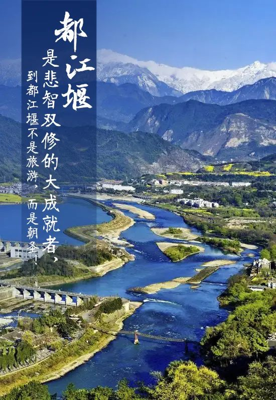
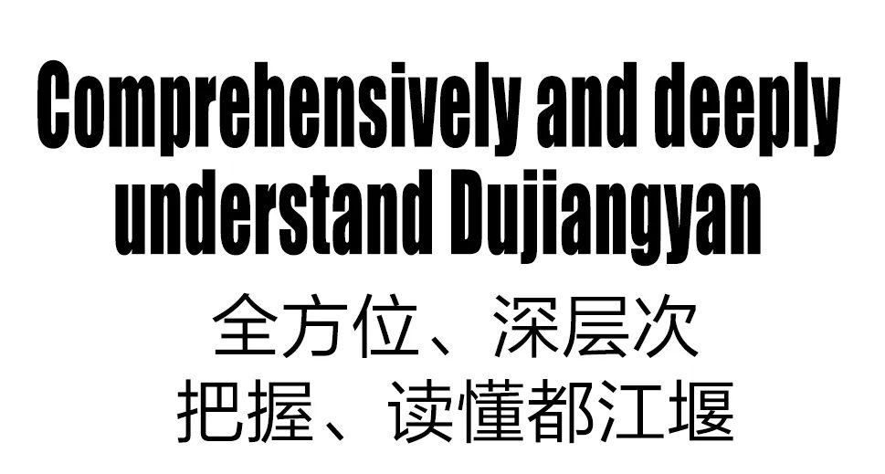
都江堰是四川名胜古迹中最令人称道的，到四川旅游，不到都江堰看看，等于没到四川。四川人对都江堰的感情亲切而深厚，特别是土生土长、喝着都江堰水、吃着都江堰灌溉出来的庄稼长大的成都人，清明时节不仅要踏青祭祖，而且还要砍槎放水，祭祀李冰父子，谢天谢地谢人。都江堰对四川乃至大中华的意义超越了许多人的认知，绝不只是一座古代水利工程，甚至全世界迄今为止年代最久、唯一留存、仍在一直使用、以无坝引水为特征的特大水利工程那么简单。用几句拗口的话说，都江堰不仅仅在都江堰（市），也不仅仅是李冰父子带领修建的，八字诀不仅仅只有“逢正抽心，遇湾截角”。不要把都江堰看小了、看浅了、看偏了。要全方位、深层次把握都江堰，关键在于看清楚都江堰的四张面孔。
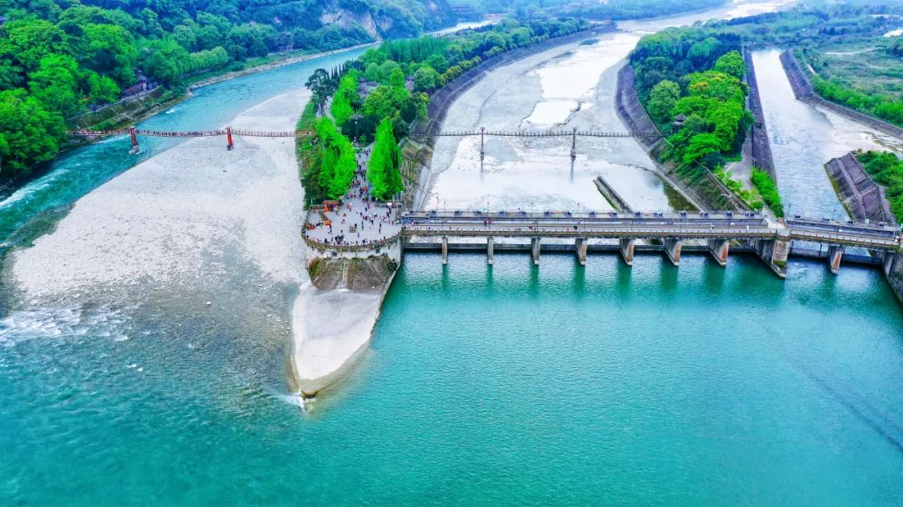
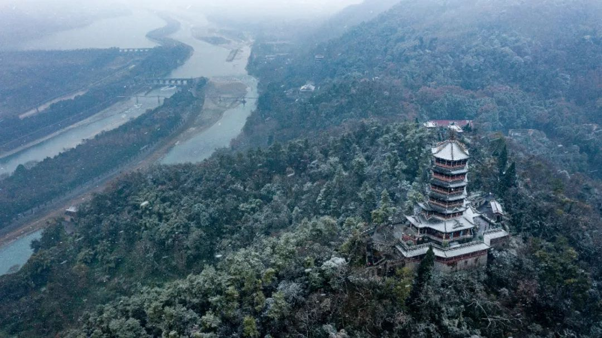
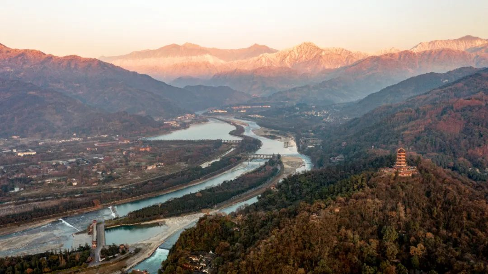
第一张面孔——道统。都江堰之所以伟大，首在这个道统。其道为“以民为本，身体力行，实干兴邦”，其统为自大禹至望帝丛帝、至李冰父子一脉相承。都江堰是救民于水火的工程，是泽被千秋万代的工程，是民心工程，是德政工程。它不是画出来的，也不是吹出来的，而是干出来的，是大禹、李冰等一代又一代“带头大哥”承继这样的道统，爱民如子，亲历亲为，解民难，救民苦，与民众同吃同住同劳动，带领大家一手一脚干出来的。
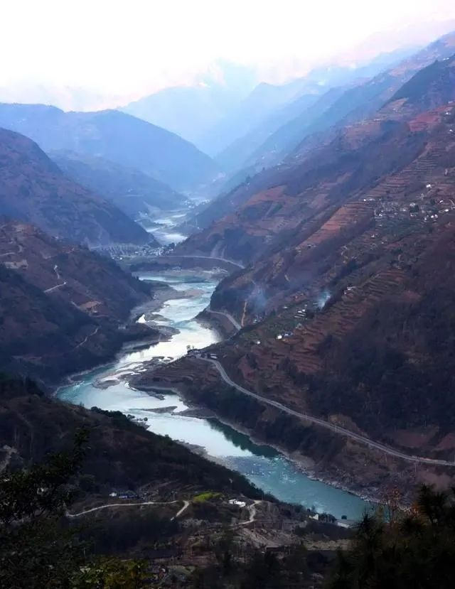
▲岷江
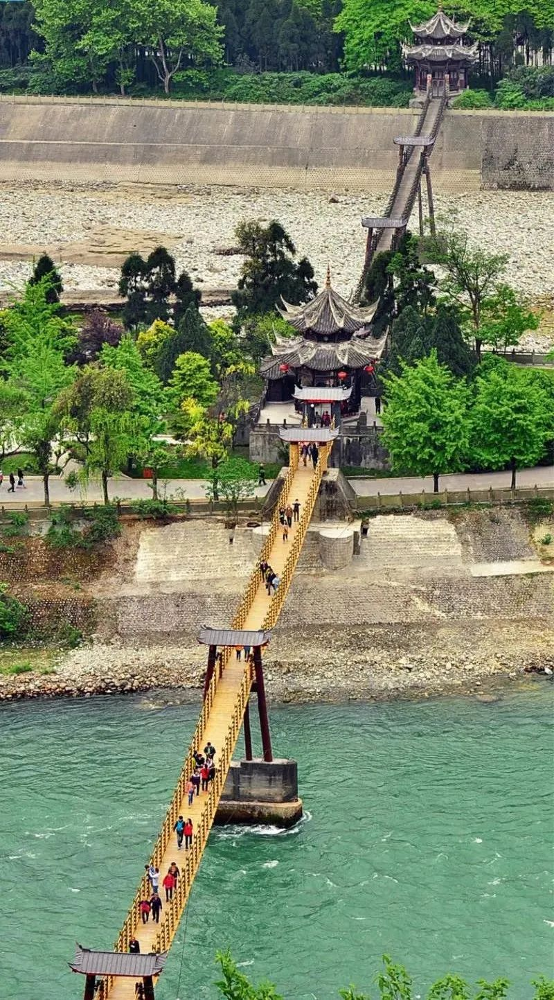
▲都江堰安澜桥
都江堰的缘起在于解决水患。古代水势汹涌的岷江（郦道元《水经注》称“岷江导源”不是从河流长度，而是从水量和人文影响角度考量的）冲出龙门山大峡谷，出现在成都平原头上，成为悬在成都平原头上的一把利剑，非旱即涝，不是“赤盆”就是“泽国”。一遇暴晒，赤地千里，颗粒无收；一遇暴雨，洪水泛滥，“江水初荡潏，蜀人几为渔”，古蜀人民深受其害，水患不除，邦无宁日，治理岷江带来的水患是当时老祖宗们的头等大事。综合《尚书》《汉书》《华阳国志》《越绝书》《水经注》等记载，最早带领大家修筑都江堰的不是李冰父子，而是大禹。出生于昆仑山东麓的西羌地区岷江河谷（无论是北川、汶川还是茂县）的大禹走出岷江龙门山峡谷，这是一个怎么也回避不了的问题。《尚书·禹贡》载“岷山导源，东别为沱”，说大禹治水从岷江开始，引岷江水向东，是为沱江。从地理环境上看，这应该是关于都江堰分水的最早表述。《汉书·沟洫志》载“昔大禹治水，山陵挡路者毁之，故凿龙门，劈伊阙”；《越绝书》卷一载“禹穴之时，应龙以铜为兵，以凿伊阙，通龙门”；《水经注》载“昔大禹疏龙门以通水，两山相对，望之若阙，故谓之伊阙”。如果这些记载不是传说而是史实，全都印证了《尚书·禹贡》的说法，说的应该就是大禹兴修都江堰的故事。这里讲的龙门即川西龙门山，而不是历史上被人们附会的洛阳（河津）龙门（北宋时司马光就有疑问，现地质考古，洛阳龙门是距今20多万年前更新世晚期自然形成的，不见人工痕迹），这里的“伊“是古语中“若”“好像”的意思，而非郦道元误解的所谓的“伊水历其间”，或者说郦道元讲的是“一水历其间”。大禹本来根正苗红，祖父是黄帝，爷爷是颛顼，五帝中连同他自己占了三席，不料半途中杀出一个不争气、以堵治水失败的父亲鲧。他知耻而后勇，不以私害公，躬亲劳苦，时而左手握准绳，右手把规矩或木锸；时而化身为熊，挥舞开山斧，与劳苦大众一起，栉风沐雨，披星戴月，吃在工地，睡在工地，挖山掘石，三过家门而不入，疏通九河，鼎立九州，铸就了“公而忘私,民族至上，民为邦本，科学创新”的大禹精神。
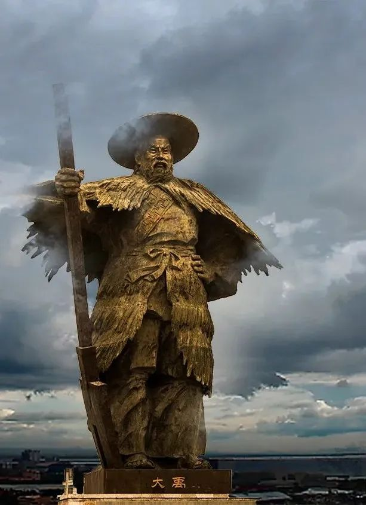
▲大禹雕像
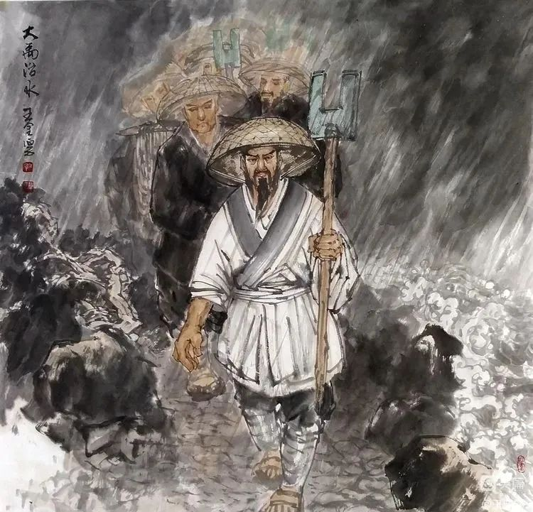
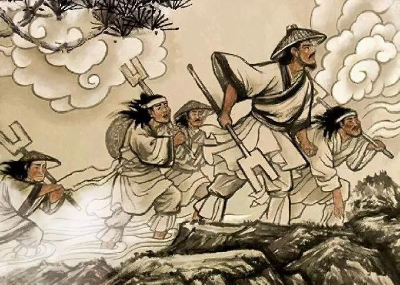
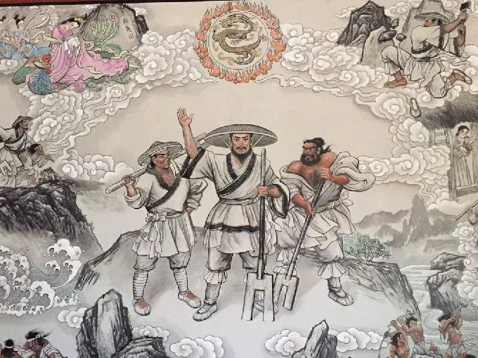
▲大禹治水精神
第二次大规模组织修建都江堰的是杜宇鳖灵即望帝丛帝。望从二帝的故事完全是舜禹二帝的翻版。望帝年迈之时，大禹兴建的工程不够用了，加之年久失修，岷江再度泛滥，大量百姓深陷水潦，痛苦不堪，望帝力不从心，就启用了年富力强、水性特别是潜水能力极佳的鳖灵治水。鳖灵可谓大禹第二，也是拼命三郎，长期住在工地，凿玉山，再劈柏条、浦阳二河，增加东排沱江的水量，并疏浚沱江。因治水有功，望帝禅位给鳖灵，是为丛帝，开启古蜀开明十二朝文明。退位后的望帝隐居西山，念念不忘蜀地老百姓，死后化为子规鸟，每年暮春飞回，声声啼叫“不如归去”或“阿公阿婆，割苗插禾”，叫破了嗓子，血滴大地，长出了鲜艳的映山红。这便是望帝啼血的故事，千百年来，影响了一代又一代华夏赤子。李白出川，想念故乡，便道“蜀国曾闻子规鸟，宣城还见杜鹃花。一唱一回心一碎，三春三月忆三巴。”
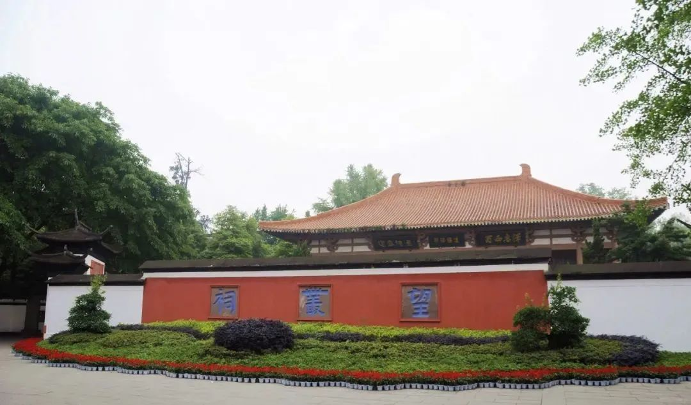
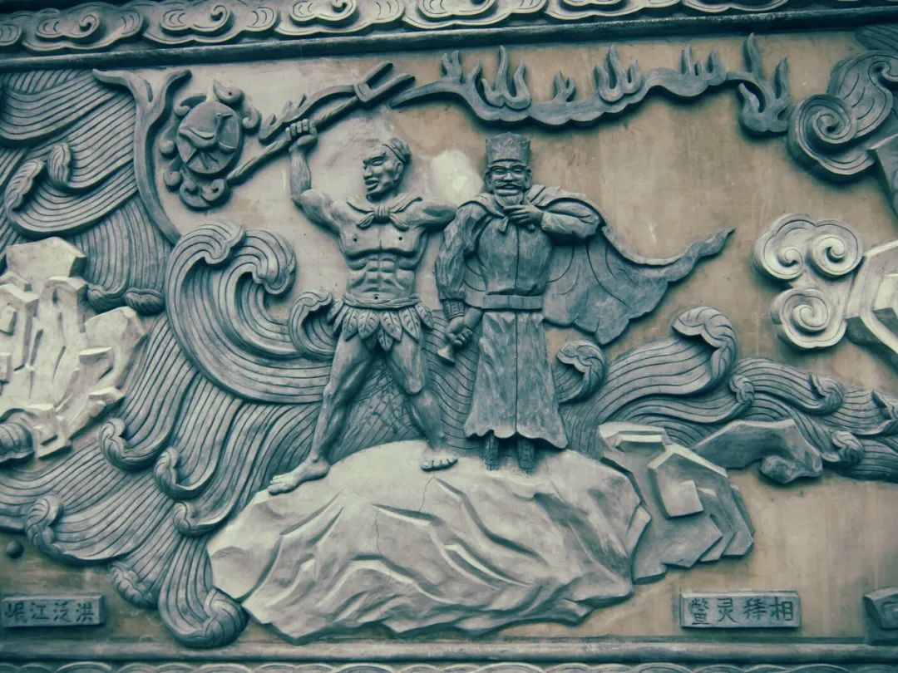
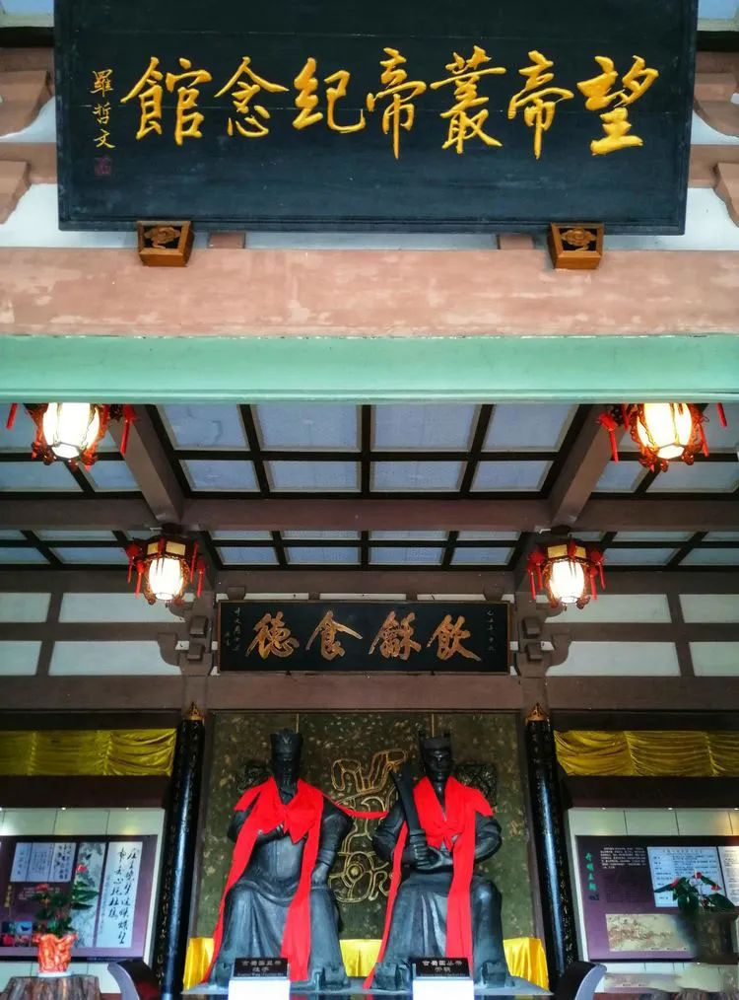
▲望丛祠
鳖灵凿玉山，可能在玉垒山开出了一条口子，但岷江在此的水患并未得到根治，于是才有了第三次李冰父子主持的系统性、具有决定性意义的修建。李冰父子深得大禹真传，和人民群众一起，在前人的基础上开拓创新，编石笼，填巨石，建鱼嘴分水；又在鳖灵的基础上用火烧石，完全劈出离堆，开宝瓶口作内江引水灌溉；又低做飞沙堰，让多余的水流到外江排洪；又沿着大禹鳖灵治水的路线向东梳理，最后死在石亭江治水的工地上。李冰父子不仅根治了岷江水患，成都平原从此“水旱从人，不知饥馑，沃野千里，谓之天府”，将天府之国的桂冠从汉中平原抢到了成都平原或四川盆地，而且还对治水工程进行了系统总结，形成了世界上最早、最完备的治水思想和方略。
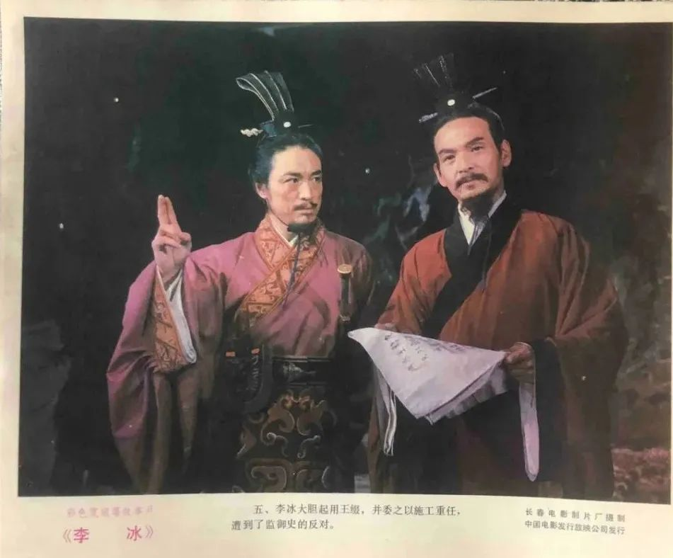
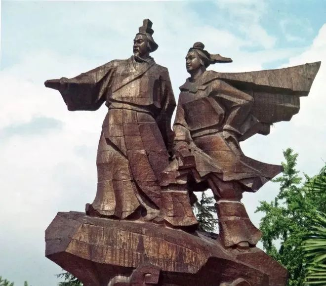
▲李冰父子
人民就是江山，江山就是人民，以人为本绝不能停留在口头上，民本情怀要深入骨髓。不要喊空口号、做空规划，关键是落实，和大家起干！实践是检验真理的唯一标准，不唯上，只唯实，“口惠而实不至，怨灾及其身”。哪怕你把名字刻进石头，老百姓也不认你的帐。李冰父子在修建之前是寂寂无名的，史书几无记载，不知为何方神圣？甚至出生在什么地方至今仍然存在较大争议（有山西、陕西、四川三说，都有一定道理），但他们把人民疾苦放在心中，真心爱民救民利民，不但敢干真干，还实干巧干，深受人民爱戴。“蜀人慕其气决，凡健壮者，因名冰儿也”，做人民的儿子，被后人奉为“川主”，次子被尊为二郎神，立祠庙纪念。南北朝时，望帝祠迁往鹃城，在原址建崇德祠纪念李冰父子，后改名为二王庙，沿用至今。元文宗加封李冰父子为“圣德广裕英惠王”和“英烈昭惠灵显仁佑王”；清世宗又加封为“惠泽兴济通裕王”和“承绩广惠英显王”。
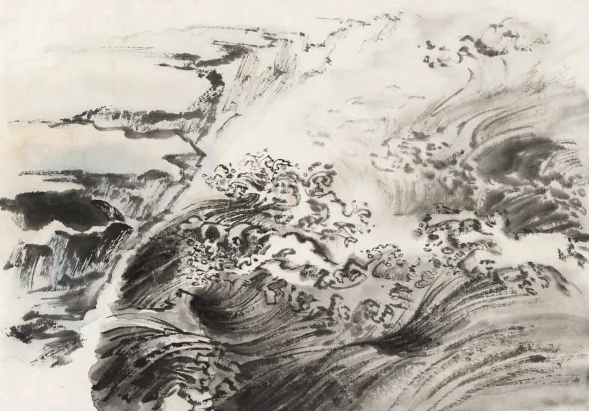
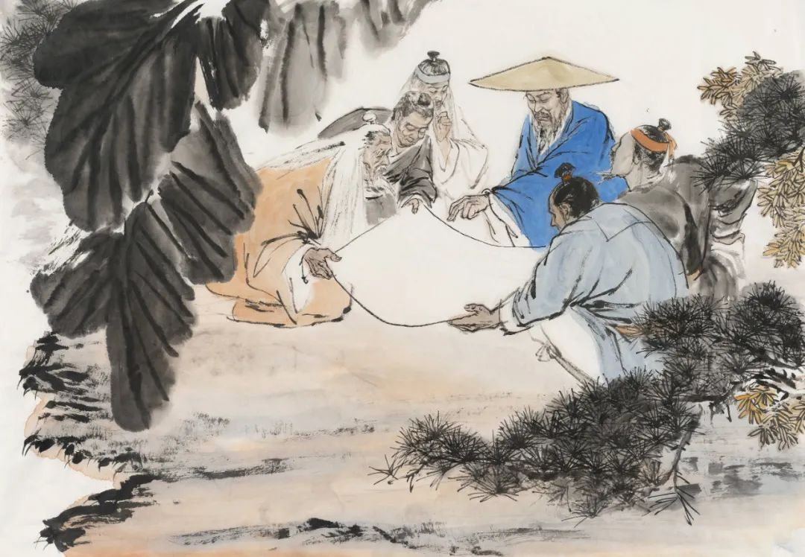
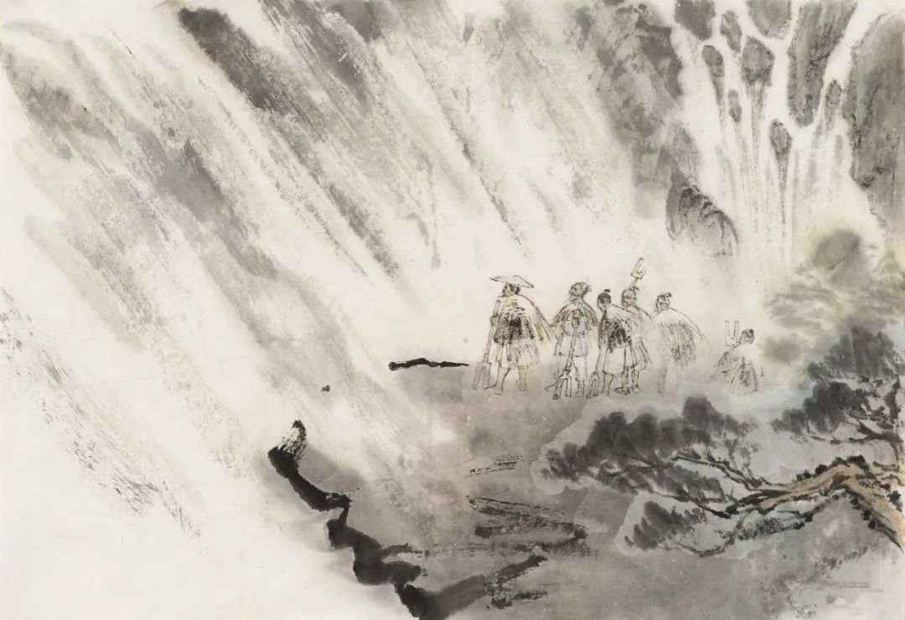
▲治水传奇
“事无小大，期于利民；功无难易，在于经久。”都江堰道统的影响十分深远，神州大地广受其利。李冰之后，汉代文翁、唐代章仇兼琼、北宋刘熙古等对灌区进行了拓展；三国诸葛亮、元代吉当普、清代阿尔泰、丁宝桢等组织了一次又一次修缮。人们额石纪念吉当普，“爱深而知远，不枉其道，不屈其志，临难忘身，为国忘家，安于命而勇于义，而知所先务，故事可立而功可建”，不是一个活脱脱的元代大禹吗？特别是承袭其道统走出四川的“大家”们，更是将其种子撒向了五湖四海。杭州西湖有两个人工堤，都是四川人组织修筑的。北宋苏东坡治杭，疏浚西湖，筑苏堤，立三空塔以定水位，与李冰立石犀石人同出一辙，无意中造就了“西湖第一胜景”——三潭映月，奠定了南宋都城的基础。明代杨孟瑛治杭，再次疏浚西湖，建六桥，筑杨公堤，避免了西湖的泯灭。29年后，又一四川人汤绍恩沿大禹足迹到绍兴，以“如再溃，当以身殉”的勇气，在江海之间建三江闸，阻潮汐、强排涝、控蓄泄，越人建汤公祠祭祀。
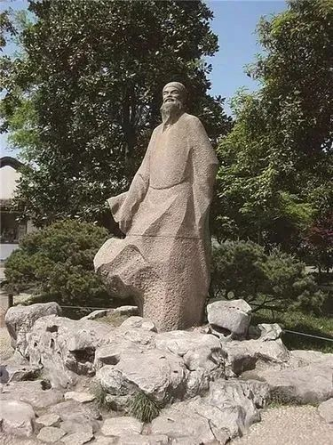
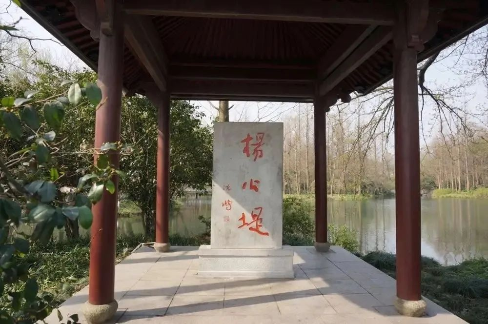
▲杨公堤
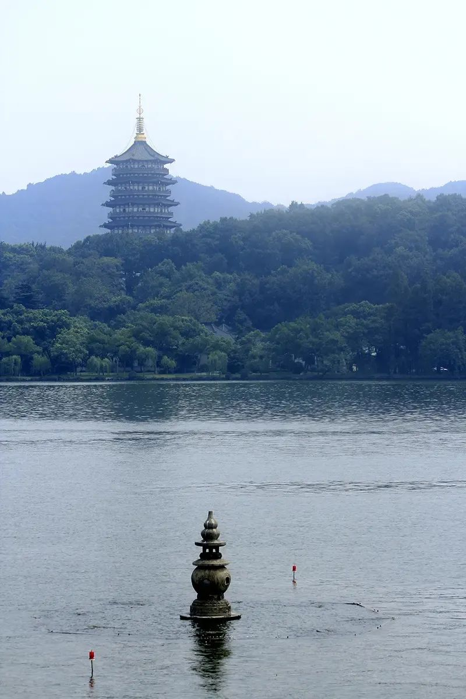
▲三潭映月
第二张面孔——格局。都江堰格局之大，超乎想象。都江堰是世界上最大的灌区，也是最大的战略纵深。在一般人的印象中，都江堰就在都江堰市，由鱼嘴、飞沙堰、宝瓶口、二王庙、玉垒山、伏龙观等构成，这是狭义的买门票的都江堰景区范围，就都江堰这一世界特大水利工程而言，只是渠首工程，只是序幕，大幕就此拉开。
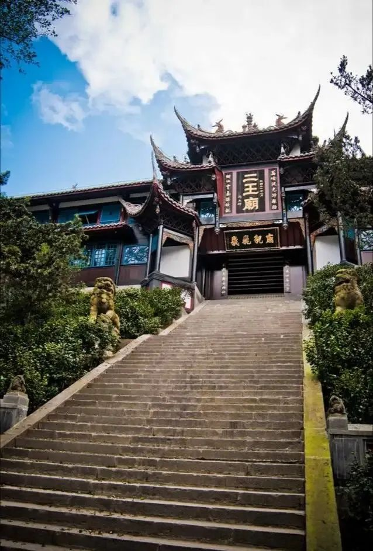
▲二王庙
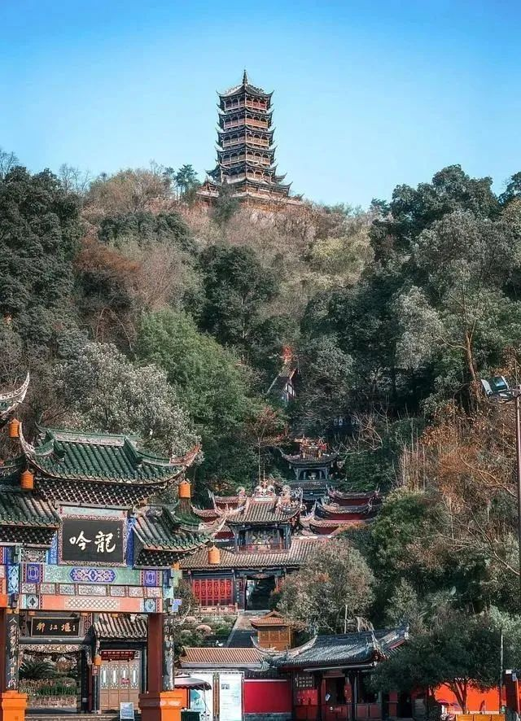
▲玉垒山
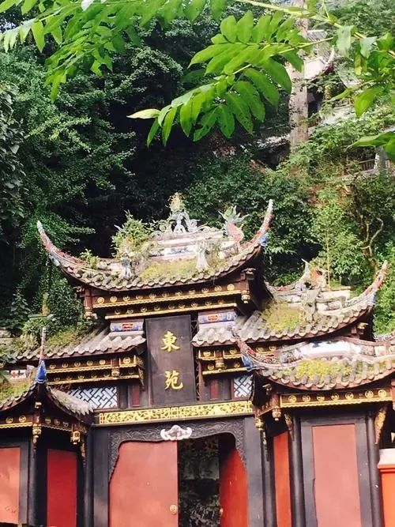
▲伏龙观
从空间上讲，都江堰一开始就超越了都江堰市的范围。大禹“东别为沱”，经郫都新都到了金堂。李冰父子组织修建的，已经从都江堰市的灌口延伸到了彭山县的江口。除“李冰作大堰于此，壅江作堋，堋有左右口，谓之湔堋”外，仅《水经注》就有多处记载：“李冰为蜀守，开成都两江，溉田万亩”“李冰识察水脉，穿县盐井，江西有望川原，凿山崖度水，结诸陂池，故盛养生之饶，即南江也”“李冰沿水造桥，上应七宿”“江水又与文井江会，李冰所导也”“江水又东南径南安县，悬溉有滩，名垒坻，亦曰盐溉，李冰所平也”“李冰导洛通山水，流发瀑口，径什邡县”，其时的都江堰已是北至都江堰，南至彭山，东至什邡，西至邛崃，遍布整个成都平原。你在成都平原上看到的任何一条河、一道渠、一湾溪、一座桥，无论是江安河、走马河、柏条河、濮阳河四大干渠，还是外江-金马河、清水河-锦江-南河、府河、沙河、石亭江、文井江，还是洞子口、三道堰、浣花溪、安澜索桥、南桥、万里桥、安顺桥、九眼桥等，都是都江堰的一份子。
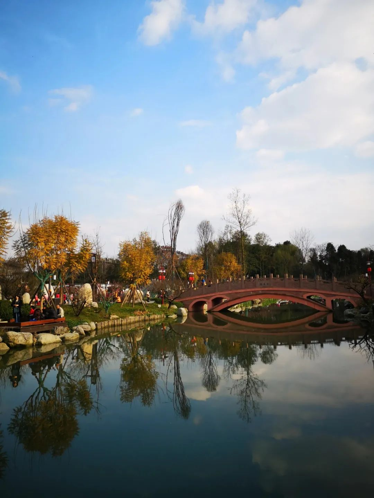
▲浣花溪
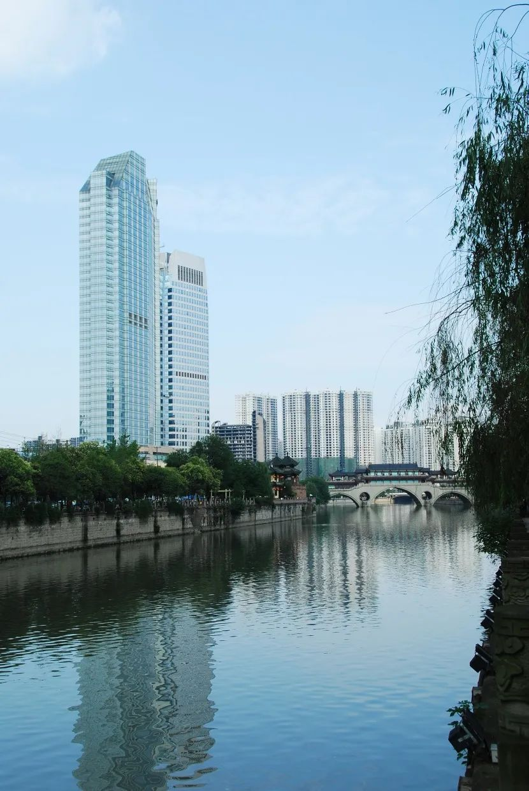
▲安顺桥
汉景帝时，文翁治蜀，不但大兴教化，在成都建石屋办公学，文风大盛，“至今巴蜀好文雅，文翁之化也”，从此“自古文宗出四川”，而且开湔江口、青白江，将都江堰灌区扩至湔江流域，“世平道治，民物阜康”，成为扩大都江堰灌溉效益的第一人。唐开元年间，章仇兼琼任剑南节度使，不仅助建乐山大佛，而且还组织对都江堰进行了全面的整治，在温江新源水附近开凿“通漕西山竹木”的新渠；在新津南河上开凿通济堰，灌溉彭山、眉山万亩农田；在成都北郊重开万岁池，蓄积池水用于灌溉，“后之以水利著者，多踵其遗迹云”。北宋刘熙古在成都北郊筑九里堤，号九里长虹。元明时期，人们又沿䢺江、文井江等凿䢺江堰、榔江堰、文脉堰、岩洞堰等，持续拓展都江堰的灌溉面积。特别是新中国建国后，开东风渠、人民渠两大系统，向东向南翻越龙泉山，建黑龙潭、三岔湖、龙泉湖、继光水库、鲁班水库等，开辟黑龙潭、龙泉山、毗河和人民渠四大子灌区，都江堰灌区从280万亩迅速越过1000万亩。目前都江堰水利工程跨越近40余县（市、区），灌溉面积1100多万亩，养育人口3000余万，是世界上最大的灌区。2000年前司马迁在《史记》中说“百姓飨其利。至于所过，往往引其水益用溉田畴之渠，以万亿计，然莫足数也”。干、支、斗、农、毛五级渠道系统，如人体血液系统遍布龙门山至龙泉山四川盆地广大西部地区。现干渠110余条3600多公里，支渠260余条2300多公里，末级渠道34000多公里，渠道总长度超过4万公里，可以绕地球赤道转两圈。2000年都江堰被列为世界文化遗产，2006年入选世界自然遗产，2018年列入世界灌溉工程遗产名录。
都江堰后来的战略意义是大禹、李冰等始作佣者没有想到的。经过一代又一代人的努力拓展，都江堰的格局越来越大，最终成为世界上最大的战略纵深。

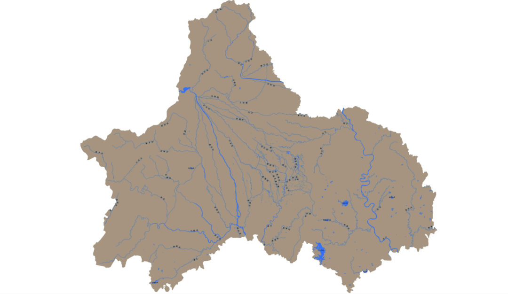
▲都江堰水系分布
“世界屋脊”“中华水塔”青藏高原东麓、中国地理第一二三阶梯过渡地区、南北分界线秦岭南沿，中华对角线从中穿过的四川盆地，因为都江堰，“疏众流以沃民田，以堑都邑”“水旱从人，沃野千里”，形成了世界上最先进的顺应自然的精耕细作的生态农业方式，生成了“郡邑为局，山水为道，诗文为子，整体地域综合为弈”的广大和谐的天人合一的境界，以及兼收并蓄、乐观豁达、勤劳勇敢的人生态度，何止一城一地？不仅成就了大成都、成就了天府之国，更成就了大中国的“大后方”，成为中华大地标准的战略腹地。2000多年来，总在民族危亡关头呵护、保留中华文明薪火，是中华文明生生不息、没有断代的重要保障。中华文明最灿烂的大一统的汉、唐、宋、明时期的文化代表性人物，如汉代的司马相如、杨雄，唐代的李白、杜甫、吴道子，宋代的苏东坡、陆游，明代的杨慎等，大多出自川中或在川中达到最高水平。“搬不完的灌县，填不满的成都”，改革开放以来，四川的粮食总产量始终保持全国第一。秦始皇以巴蜀为粮仓和重要兵源地征战六国，统一中国。汉高祖刘邦以四川为基地，赢得楚汉相争，因纪信而在“忠义之邦”四川西充设开汉县。四川人落下闳完善春节等节庆，提供了汉代一直使用、影响至今的太初历。刘备诸葛亮西取西川，形成魏、蜀、吴三国鼎立局面。“九天开出一成都，千门万户如画图”，唐代安史之乱、黄巢起义时，唐玄宗、唐僖宗军逃往四川避难。吐蕃朗达玛灭佛，藏传佛教四大教派纷纷前往川西康巴地区。随着马祖、三苏、宝印、清了等出川，黄庭坚、陆游、杨万里、范成大等入川，源于四川的道文化、茶文化、竹文化、丝绸文化在华夏迅速传播，成为中华文明的标志性（符号性）文化之一。南宋末年，成都金堂云顶石城等四川“抗蒙八柱”联合抵抗，让号称上帝之鞭的蒙哥大汗在川“折鞭”，挡住蒙古铁骑50余年，改写了世界历史。清末，赵尔丰从四川出兵西藏，粉碎了帝国主义的藏独阴谋。抗日战争时期，国民政府迁往四川，四川盆地成为全国抗战的大后方，中央研究院迁重庆、李庄，故宫文物运往峨眉山大幅禅院保管；300多万巴蜀儿女出川铁血抗战，参战人数之多、作战之勇猛、牺牲之壮烈居全国之首，赢得“无川不成军”的荣光。新中国建国之初，十八军从此进军西藏，西藏和平解放，世界建筑史上的奇迹——川藏公路从此延伸到拉萨。上个世纪五十年代末，大三线建设以此为主展开，尔后，“两弹一星”“改革开放”“抗震救灾”“脱贫攻坚”等精神以此为主诞生。
都江堰是天府之源，是中华民族的中流砥柱，没有这样的大后方，大一统的中国就没有战略纵深。都江堰的格局，是成都人的格局、四川人的格局，中国人的格局。
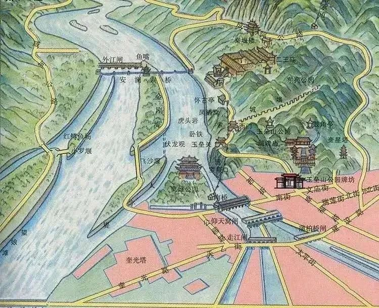
▲都江堰水利工程示意图
第三张面孔——风范。都江堰是时间的朋友、精进的典范。都江堰是修了3000多年而且还在修建的伟大工程。在漫长的历史长河中，做时间的朋友，越处越融洽，越处越亲切；不断修正纠偏，不断补短板，以实际行动诠释“致广大而尽精微”。一方面，更加完善，更加科学，以期无限接近“天人合一”；一方面经受住了历史和人民的考验。
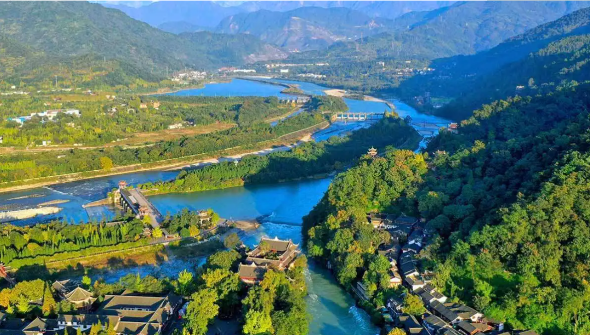
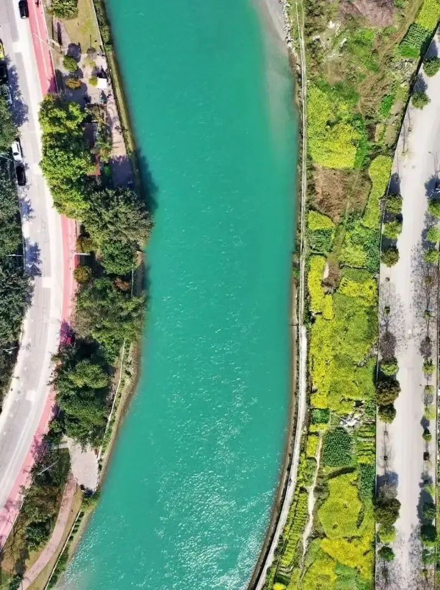
▲航拍都江堰
实践出真知，科学来自于实践，科学也需要时间，不要想一蹴而就，不要想天上掉下馅饼，“心急吃不了热豆腐”，急功近利没有出路。社会发展是有节奏、有韵律的，慢不得也快不得，老祖宗们讲，要走中庸之道。固步自封，畏手畏脚，走得太慢，群众跑到前面去了，要求很多，满足不了，是右倾；急躁冒进，太快太急，群众跟不上来，与时代与事实脱节，是左倾。发展必须稳健，与时代事实、与群众的期盼同步，必要的探索是需要的，该交的学费还得交，摸着石头过河、重新来过的时候很多。当代人去都江堰参观，都会惊叹其四六分水的科学性、流水角度的精准性，这是都江堰应该有的模样，却不是开始的模样，是千百年来校正的结果。
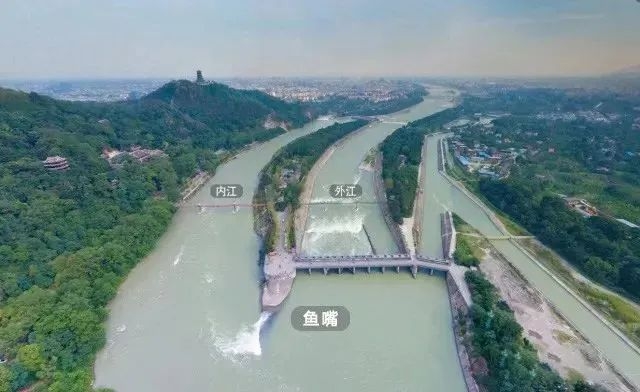
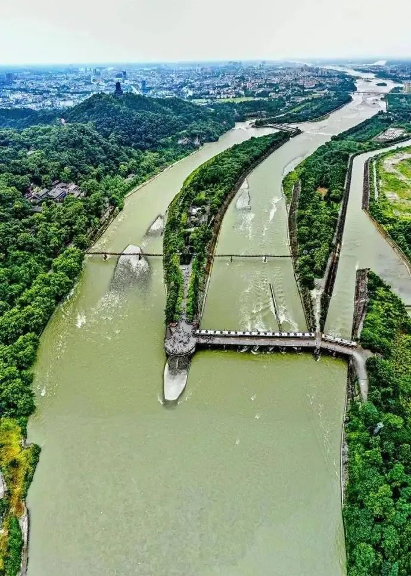
▲都江堰鱼嘴四六分水设计
大禹吸取其父鲧只堵的教训，采用疏导的办法开龙门、引沱江，但由于过去没有记录，他也很年轻，对于岷江历年来的水文、水量、水位的掌握不够，第一期的都江堰是粗糙的，以至于望帝后期仍然洪水泛滥。鳖灵劈玉垒山，增加了东排沱江的水量，暂时解决了问题，但依旧是弯道排水，难以迅速消洪，且只排未用，浪费了水流。有了前两次的经验教训，李冰父子如鱼得水，不仅解决了排涝的问题，而且变废为宝解决了抗旱的问题。
他们做的第一件事情，是将分水工程往上游顶了顶，顶进了峡谷中，没有筑坝，却用竹笼笼石沉江堆出鱼嘴，利用谷中水量大、水流急和峡壁框水的优势控制分水。第二件事是改变大禹鳖灵九十度弯道引水向沱江的做法，完全劈开宝瓶口，从东南面直开内江引水灌溉整个成都平原，不仅消除水患，还进行开发利用。第三件事是低筑飞沙堰，沿着水流方向向南（偏西一点），将多余的水直接排到外江，从外江-金马河直流渠尾江口。第四件事是定标准，通过观察并多年调整，根据宝瓶口的宽度和飞沙堰的高度决定流入内江的最大水量，“作三石人立于水中，刻要江神，水竭不至足，盛不没肩，是以蜀人旱则藉以为溉，雨则不遏其流”作为“深淘滩，低作堰”的标准，后又“作石犀五头，以厌水精；后转犀牛二头，一头在府市市门桥，一头沉之于渊也”。十年前成都城中修建天府广场，出土了其中一头石犀，证明了记录的真实性。这四件大事使都江堰得到彻底改观，发生了质的飞跃。2000多年来，成都这座特大城市再也没有受到洪涝灾害的冲击，哪怕是1934年叠溪地震堰塞湖溃堤，依然无恙，是中国大城市中唯一主城区没有移动过、名字没有改变过的一座城市。
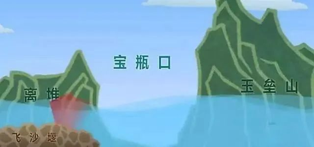
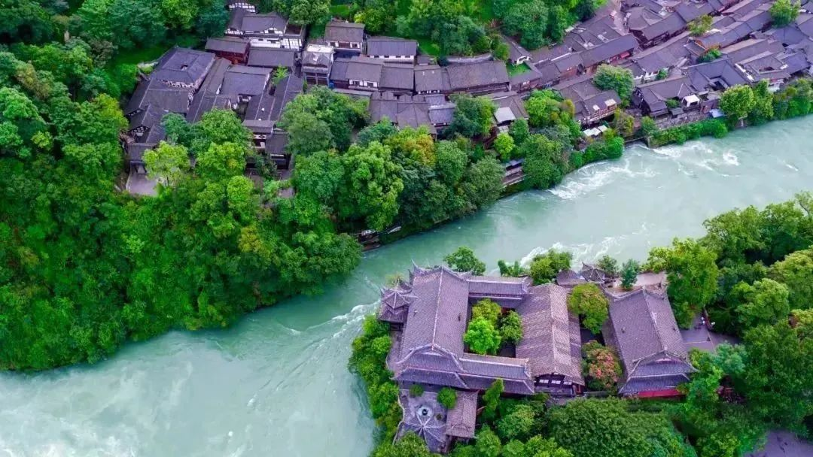
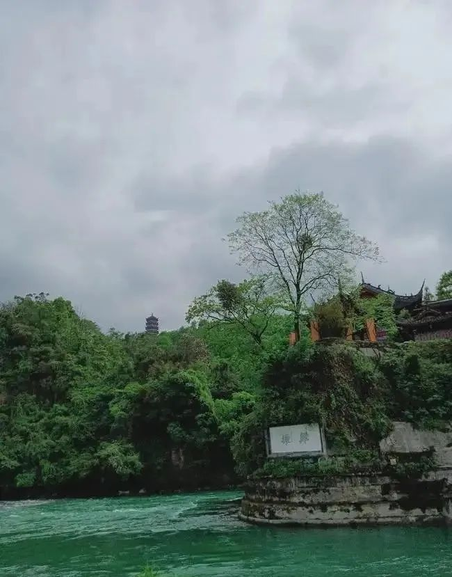
▲都江堰宝瓶口
即便如此，工程也并非十全十美，如分水鱼嘴的竹笼时间长了就要腐烂，一旦腐烂，笼里的石头就会溃塌，鱼嘴分水的功能就会大打折扣。元代吉当普通过试验，改用冶铁浇筑，以铁治堰，铸大铁龟作分水鱼嘴，将竹笼结构改为铁石结构，以期一劳永逸。完全依赖这种方法也不行，铁太生硬，没有弹性，且也有生锈的时候。于是，明代中期提督四川水利的卢翊，又做改进，铁竹并用。明代后期，施千祥效法吉当普在鱼嘴铸铁牛镇守。清代强望泰置卧铁作为淘滩标准。
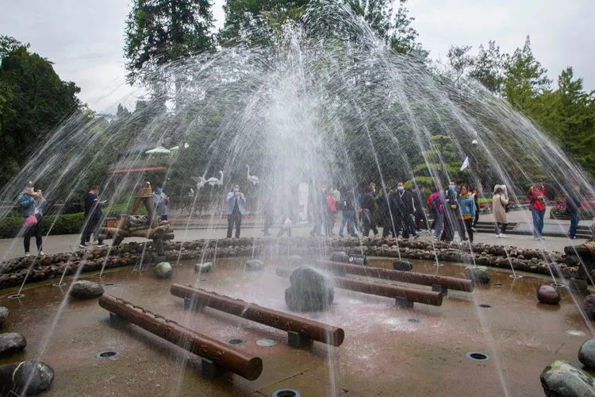
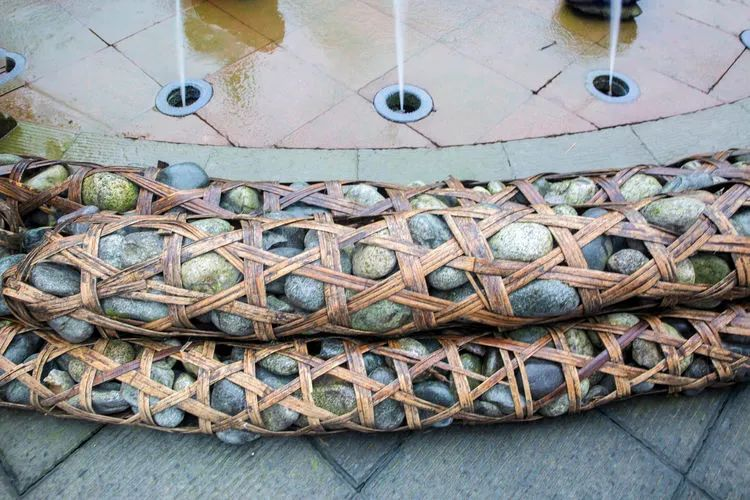
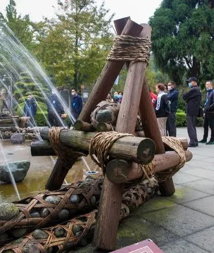
▲都江堰治水三宝：卧铁、竹笼、杩杈
千百年来，人们一锄头一锄头地挖，一锤一锤地打，一点一点地凿，一寸一寸地移，一厘一厘的截，坚韧不拔，保持了足够的历史耐心，一代又一代，经过无数个日日夜夜，风吹日晒，千磨万击，总结提炼，工艺越来越精细，角度越来越精准，材料越来越耐用，维修制度越来越完备，终于将都江堰打磨成现在的样子。
第四张面孔——哲思。都江堰不仅是超级水利工程，也是伟大的文化工程，除早期的排洪灌溉功能，还能行无言之教和大美之旅等，不仅灌溉土地，还能滋润心田，为繁荣和发展中华文明发挥了巨大作用。李冰父子继承大禹、望丛衣钵完善都江堰，一靠继承道统，厚植民本情怀，树立了最永恒又有最鲜活的价值观；二靠继承方法，疏堵结合，顺势而为，凝成了最实用又最科学的方法论。经过实践，经过提炼，人们在二王庙的石壁上刻下了“乘势利导，因时制宜”八个字，这就是都江堰的哲学思想，是都江堰哲学意义上的“八字诀”，是治水治国理政经验的重要总结，是真正的点睛之笔。字不大，很低调，却洞穿历史，光芒四射，是都江堰第一至理名言。引深一步，也可以说是“道法自然”或“自然之子”。
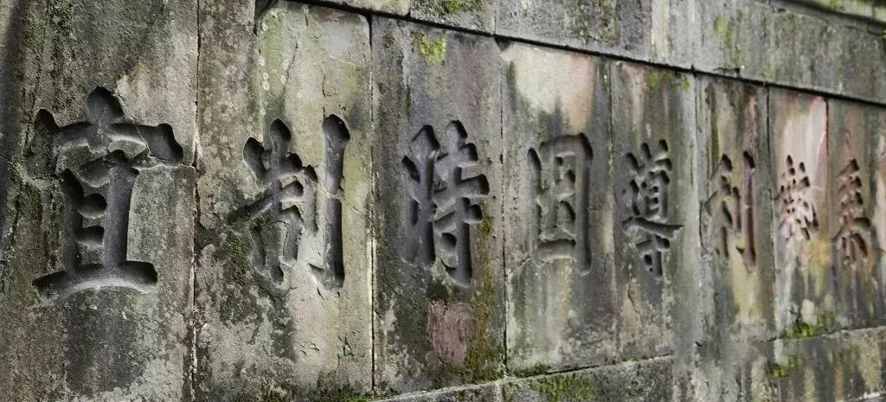
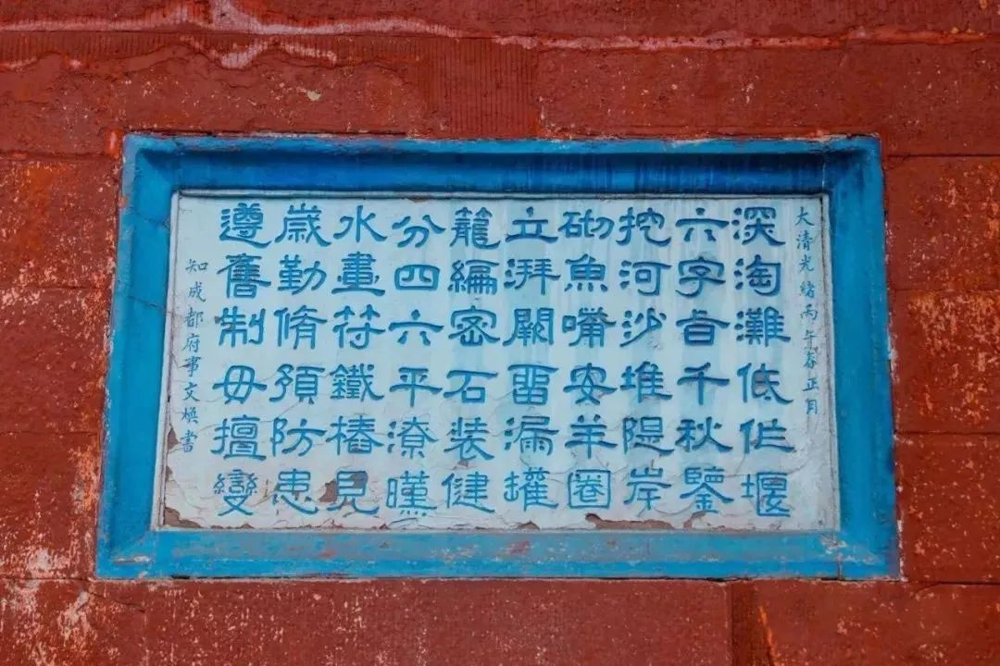
▲治水“八字诀”与“三字经”
凡事顺势而为才是大道，道者规律也。人是自然之子，必须遵循自然之道、天地之道，认识自然规律，顺应自然规律，循序渐进；逆势而为，逆历史潮流而动，只会栽跟斗，摔得头破血流。“天人合一”既是人生的源头，也是终极目标，如果过程也是这样，就很圆满。山水、天气和众生都是自然的产物，也是自然之子，人在其中发乎自然、应天时地利民心、顺势而为的东西，当然也是自然之子。要具体问题具体分析，“深淘滩、低作堰”“遇湾截角、逢正抽心”等是原则，具体要多深多低多少度？要因地因时而异，不要一刀切。许多问题，该来的总会来，既回避不了，也堵不住，要敢于面对，迎难而上，疏导化解，“痛则不通，通则不痛”。事物是发展变化的，“变者，天下之公理也”，时代变了，情况变了，要及时跟进，不能因循守旧，固步自封。

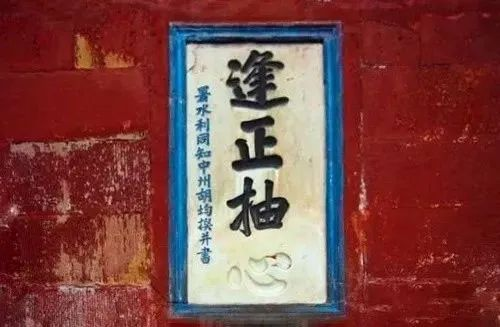
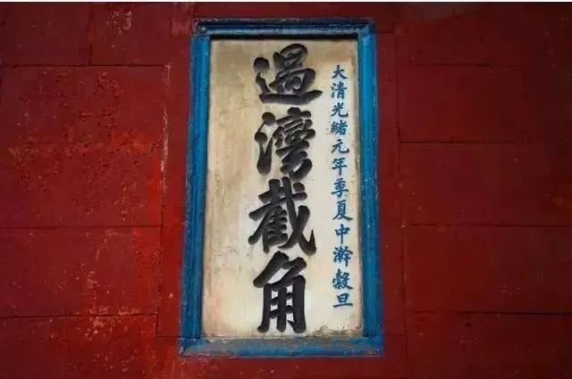
▲治水原则
都江堰的哲学思想潜移默化，润物无声，启迪、造就了许多智者，极大地丰富了中华文明的内涵。李冰父子系统整理修好都江堰后393年，通晓五经的江苏太学生张道陵来到这里，深化提炼，在川西云里雾里和纯厚的环境里悟道，谓逢“天人”，奉老子李耳为教主，自号“天师”，以《道德经》为最高经典，教民学李冰取盐之法，以符水等为人治病，创立了中华民族历史上唯一的宗教——道教，倡导“上善若水，道法自然”。唐代，灌区“大禹仙乡”什邡土生土长的大寂禅师马道一，反对繁文缛节，主张自我行探，唯我唯实，大开大合，与弟子百丈怀海一起创立了我国佛教的丛林制度；提出“触境皆知”“随处任真”“任心为修”“即心是佛-非心非佛-平常心是道”“何为平常心？无造作，无是非，无取舍，无断常，平凡无圣”“行住坐卧，应机接物，尽是道”，倡导在日常生活和劳作中修行，被尊为“马祖”，铃木大拙称之为“唐代最伟大的禅师”，胡适说他是“中国最伟大的禅师”。宋代出生于灌区郫都的圆悟克勤，一方面强调直下承担，一方面又集成禅门第一书《碧岩录》十卷，立文字禅，并以禅宗观念和思辩品味川茶的无穷奥秘，挥笔写下“禅茶一味”，被钦封为“佛果禅师”“真觉禅师”。民主革命时期，经过无数次血的教训，中国共产党人将实事求是写到了自己的旗子上；改革开放，经过真理问题大讨论，又加上“解放思想，与时俱进”。
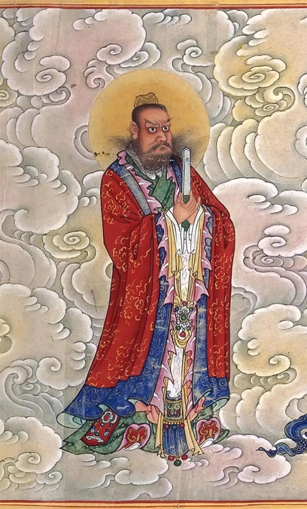
▲祖天师张道陵
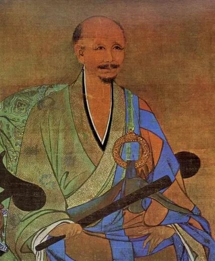
▲宋代高僧圆悟克勤
都江堰的哲学思想耳闻目染，影响了一代又一代四川人、中国人。锦江是都江堰水系流经成都城区主要的也是最知名的一条内河。西汉时期，中央政府在河畔设立锦官城专司绸缎买卖，成为当时中央财政的主要来源之一；司马相如携卓文君私奔来到这里，一边弹琴卖酒，一边刻苦学习，终于“驷马高过”，成为一代“赋圣”，出使西南，打通南方丝绸之路，“盖世必有非常之人，然后有非常之事；有非常之事，然后有非常之功”。三国时，诸葛亮在一座李冰修建的桥下送费祎出使东吴，说“万里之行，始于此”，此桥便有了万里桥之名，“门泊东吴万里船”。唐代，唐僧到府河边的大慈寺剃度；杜甫来浣花溪畔结草堂而居，春夜喜雨，“细雨鱼儿出，微风燕子斜”“江山如有待，花柳更无私”；大美女加大才女薛涛到锦江河畔凿井制笺，伴竹苦吟，“望江楼上望江流，江流千古江楼千古”，与唐僧、杜甫一起被称为唐代三大“蓉漂”；在河里洗衣的浣花夫人，巾帼不让须眉，代夫组织民众驱逐外敌。南宋时期，陆游来此逆流而上，“二十里中香不断，青羊宫到浣花溪”；杨万里在河畔感叹“万里桥边多酒家，游人爱向谁家宿”。清初，一代枭雄大西王张献忠在渠尾江口“折戈沉银”。辛亥革命前，成都同志利用都江堰水系发“水电报”，号召大家起来誓死保路。都江堰是中国农耕文明当之无愧的代表作，改革开放后农家乐、乡村旅游乘势而上，温江金马公社、万春镇，郫都友爱村，崇州白头五星村、道明村，大邑幸福公社，邛崃天府红谷，新津天府农博园，金堂鲜花山谷，彭州宝山-太阳湾等“次第花开”，灿若繁星。
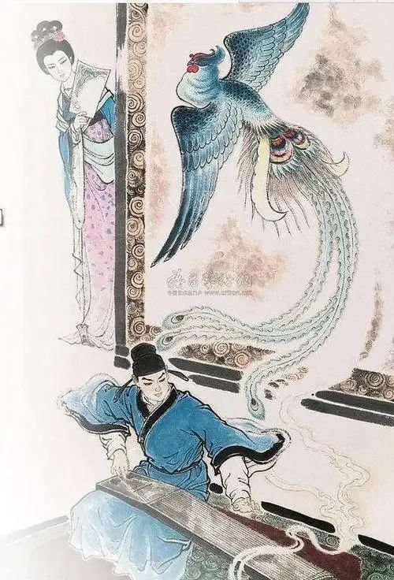
▲司马相如与卓文君
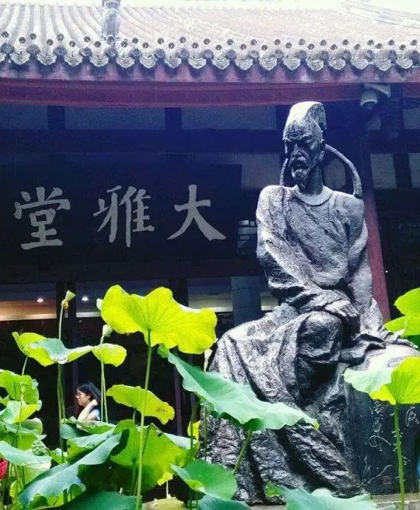
▲杜甫草堂
都江堰是仁者，仁者寿，仁者无敌，刚劲威猛，勇于担当，厚重不迁；又是智者，智者乐，智者灵醒，激情澎湃，活力四射，开拓创新。都江堰是悲智双修的大成就者。到都江堰不是旅游，而是朝圣！（文/文月 2022年4月中旬初稿于彭州，下旬二稿于成都）


图片均来自网络，如有侵权请联系删除
“东软”核酸系统争议背后，更关键的问题却被长期忽视
9月2日，成都全市居民正在进行全员核酸检测时，“成都核酸系统崩了”登上微博热搜。据网友反映，当天晚间，虽然现场医护人员通过将手机高高举过头顶的方式来获得信号，却依然无济于事。
据媒体后续跟进报道，事实上是成都的核酸检测系统出了问题，该系统背后的开发企业正是“东软集团”，而这也并不是东软第一次出现类似事件。
围绕“东软”的争议及舆论场上热议的话题，四川质量发展研究院高级研究员熊节做出如下评议：
观察者网：根据目前披露的信息，成都核酸系统崩溃，问题可能出在哪里？
熊节：就核酸系统来说，它的数据写入并不复杂，从检测量推算，平均下来也就是每秒300左右的并发，这放在IT系统里面来说压力不算大。有很多常见的IT系统，比如银行、支付、电商等系统都能够很好承载这种水平的压力。所以就单纯从技术上来说，核酸检测系统的压力负载不算特别大的。
从目前的情况来看，是新旧系统切换，又恰好赶上了全市的静态化管理，需要三天三次核酸检测，所以就出现了问题。对于“东软”这套新系统，我认为它是在非功能性需求没有得到充分验收的情况下紧急上线，所以才出现了系统崩溃不能响应的情况。
一般来看，如果在这种负载量较大的情况下，测试和验收做得不充分，就可能导致系统在之前小范围试用的时候运转良好，但是一旦到了全市大范围使用的时候，经受不住压力考验继而崩溃。我觉得这是一个比较明显的问题。

核酸检测采样（新华网资料图）
观察者网：您提到了系统验收的问题。除却微观个案，从宏观的角度看，类似的情况在数字化系统建设过程中是否也存在呢？除了验收，在数字化建设项目中还存在哪些亟待关注的短板和不足？
熊节：核酸检测系统其实挺有代表性的。这两年新冠疫情的影响，某种意义上也推动了我们国家数字化建设的发展，迫使我们上线了很多重要的数字化系统，健康码、行程码、核酸码都是典型的例子。
同时，它也暴露出来我们数字化建设过程当中的一些短板。因为数字化系统，尤其是软件系统，它和传统的工程建设系统有很大的区别。
第一，对于数字系统的产物交付，很多甲方的处理边界是模糊的。软件产品交付给甲方以后，甲方是不是真正拥有了这个软件系统，其实经常是很成问题的。甲方经常名义上拥有了一个软件，实际上完全对这个软件没有控制。
它体现出来的现象之一就是，甲方采购一个系统以后，就会形成对厂家的严重绑定和依赖。如果想进行后续的维护，找其他厂家来做就非常困难，因为厂家都会有自己的技术门槛、技术壁垒，这给甲方的选择造成很大的约束。
第二，甲方对软件研发的过程缺乏管控。在软件系统的采购中，或多或少都存在这个问题。这不是说我们没有软件工程的标准方法，或者是没有项目监理之类的角色，但是实际上的情况就是我们这个行业里面，软件工程方法都是比较浮于纸面的，包括甲方自己的验收和第三方的监理也存在这一问题。
对于不少甲方和监理而言，他们管理的更多是流程，管理的是文档，很少有甲方或者监理有能力进入到系统的源代码里面去，去了解系统的整个建设过程到底是怎么在发生的。
这就带来第三个问题，就是对软件研发的质量缺乏管控。我们可以用建筑行业做一个类比，比如说甲方单位要修个大桥，那么监理肯定要关注建设过程中的若干质量要求，包括设计的质量、施工的质量等等。可大量软件项目的质量把控其实做得是非常皮毛的，如果我们把软件系统类比为一座大桥的话，很多软件项目的验收就是一辆车在桥面上开过一次，项目就验收了。
这种现象在建筑行业中是不可想象的，甲方起码得验收最终交付的建筑跟当初的设计是否吻合，起码得验收大桥的结构是斜拉还是桥墩、有几个桥墩、桥墩的结构强度是否符合要求……然而有很多软件项目，甲方根本没有去验收软件的架构设计是否得到了实施，就好像验收大桥的时候根本不看有几个桥墩，找辆车开过去就验收了，因为甲方并没有能力去了解这个软件的架构到底是什么样的。
比如这几年流行“微服务”的概念，这个技术术语代表的是一种软件架构的风格，有很多的厂家会在自己的方案里面写：我们采用了微服务架构，所以我们这个软件很先进。但是绝大部分的项目里面，甲方没有能力对架构进行验收，他根本没法知道这个软件到底是不是采用了微服务架构。
我觉得这是一个很严重的问题。几年前某外企曾经采购过一家中国软件公司开发的软件，乙方也号称是微服务架构，结果甲方有一位从美国来的架构师在会议现场打开系统源代码来检验，指出乙方并没有采用微服务架构。像这样的技术能力，我国大部分非IT行业的甲方是不具备的，因此就留下了更大的“忽悠”的空间。
在具体的项目开发过程中，还有一些其他的问题，比如说企业间的层层转包，企业内部的层层下发，任务最后可能下发到技术能力有限的一些年轻程序员手中，甚至还可能是根本不具备相应能力的“无证程序员”手中，而经验丰富的程序员大部分都是在忙售前阶段的工作，逐渐远离软件开发第一线。这可能就把一些潜在的性能隐患和安全隐患埋到系统里面，再加上前面我们说的甲方的验收质量把控又没做到位，那么这些隐患可能就一直埋下去，最终在正式使用时爆雷。
观察者网：从这些案例出发，您能否为我们总结一下数字化新基建给传统的项目采购和管理机制带来了哪些新的挑战？
熊节：软件项目的招标一般来说是百万千万这样的规模，相对于建筑工程来说，金额没那么大，但是水很深。刚才我们也提到了一点，数字化新基建的软件项目往往有很大的依赖性和绑定性，一个厂商做了一个系统以后，其他的厂家很难在它的基础上去加强完善。
于是，我们就会看到一个现象：一些厂商的系统价格很便宜，甚至是不要钱，它们去投标政府采购的项目，凭借价格优势中标之后就可以长期拿项目。因为只要它们的系统打进去之后，在这上面需要做增强、扩展的时候，政府没办法找别家公司。
因为政府作为甲方，也没有能力掌握源代码，所以二期、三期工程就必须得找同一家来干，你找其他家干不了。于是很多厂商找到了一种绕开公开招投标的方法：一期工程以很低的价格进入，价格低到可以不用公开招投标，然后在二期三期不断做增强，把真正想做的功能放进去，整个工程的金额变得越来越大。由于厂商很容易在软件里设置技术门槛，后面二期三期工程其他厂家很难接手，往往就会变成定向采购。这种现象确实可能会带来更多的不透明的操作，甚至更多的腐败空间。
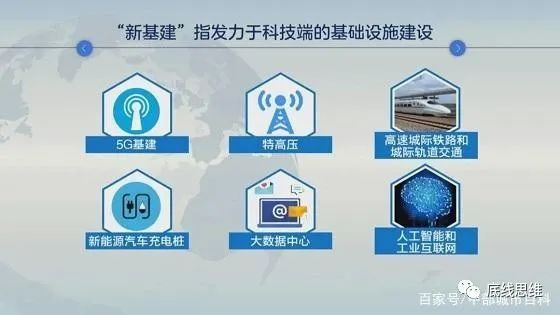
新基建资料图
另外一些挑战就是我刚聊到过的，甲方在技术能力上面的缺失。当然甲方不必是技术专家，传统的基建项目也是这样。但是我们要看到这里面有一个相对性，传统的基建项目里，甲方就算不是专家，他对基建的了解程度也是相当深的。可我们看到不少数字化新基建的软件项目，问题严重到可以说是乙方想怎么做就怎么做，最后乙方很简单地跑一下基本功能就完成验收，性能、压力、安全性等非功能需求和软件架构设计质量、研发过程质量、代码质量等内部质量都无法验收。
这是一个很严重的问题，它会造成大量表面光鲜的“豆腐渣”工程在数字化建设中被验收、被使用，对于我们打牢数字化新基建的基础是非常不利的。
观察者网：考虑到这些情况，您觉得各方该如何共同应对此类新挑战？
熊节：我国目前在数字化建设上处于国际领先地位，在全球来说都是逐渐走进了无人区的感觉。进入新的领域以后，就必然会有新的挑战。我觉得这里面除了采购服务的政府部门、参与其中的技术企业要付出努力、积极应对挑战外，还应该有学术界、行业组织和官方标准机构的介入与通力合作。
首先对于数字化系统采购的甲方来说，提升自身的技术能力是必须的。我国当前大张旗鼓开展数字化建设，那么甲方就必须形成与数字化新基建建设相配套的能力。
其次从乙方来说，我觉得从事数字化新基建项目的企业需要做些事情去提高自己的透明度，把研发过程和质量保障过程透明出来，让甲方能看到、能看懂，能够对系统进行有效的质量检验。对乙方企业来说，把原来“黑箱操作”的研发过程和质量保障过程透明出来，这肯定是让渡了自己的短期利益，但同时也是对行业的贡献，也会给自己打开更大的机会之门。
比如华为，它过去几年在国外被打击得比较狠，英国政府要求他们自证软件可信，给他们造成了很多麻烦，但是也倒逼他们发展出了一整套软件可信机制。现在华为就有了这个能力，能证明自己的软件质量是可靠的，性能和安全是过关的，并且甲方也能理解这个验证过程。
同理，国内其他软件厂商是不是能自发地建立起一套机制，主动提升自己的能力和透明度，增加自己在行业内、在社会上的信誉，我觉得这也是需要考虑的。
第三个角度，制定标准的机构和高校，应该考虑去做一些更贴近实际的东西。现在信息技术发展太快，这使得制定标准的机构和高校有点赶不上节奏。比如说行业里流行CMMI认证和ISO认证，我坦率说，这些认证是比较不落地的。对于一线的软件开发者来说，他每天写的代码是不是合乎专业技术水平的要求，是不是达到了应有的质量标准，在这些认证里其实都是空白的，目前行业里也没有充分的管理。
因此，我觉得制定标准的机构和高校也应该考虑把这个事情做得更细更落地一些，真正落到源代码上去。最终软件的质量是落到源代码上，光管文档管流程是管不好软件质量的。那么怎么能建立一套第三方的、中立的、真正扎实有效的过程和质量标准，怎么把这些标准和指导落到源代码上去，这也是一个需要长期解决的问题。
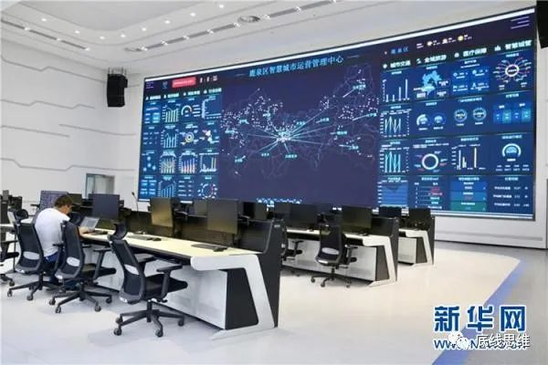
智慧城市运营管理中心（新华网资料图）
第四个角度，目前国内自发的技术社区比较少，我想或许可以组成一个政府、高校、标准制定机构、技术公司、从业人士多方通力合作的交流平台。在此基础上，或许能有一些具备技术能力的、中立的第三方监理和质量监管机构和机制出现。
今天行业里没有这样能落到技术细节上的第三方监理存在，就会导致乙方“又当球员又当裁判”的局面。比如说成都市卫健信息中心提前预判到了核酸检测信息系统会有性能压力，要求东软证明系统性能过关，但是谁有能力进行性能测试呢？实践中就还是东软自己做性能测试，提交性能测试的报告，那么东软就又当球员又当裁判了，因为甲方没有这个能力来开展性能测试，或者验证乙方提供的性能测试报告是否真实。
如果有一家具备技术能力的第三方监理存在，这个第三方就可以站在中立角度估算一组性能指标，开展独立的性能测试，从而给甲方提供更可靠的质量保障。当然这里面还会有利益纠葛，监理机构也有腐败的可能性，但是我们应该首先允许这样的第三方出现，进而再去思考完善之策。
除了性能问题以外，数据安全也是一个非常重要、但是又技术性很强、甲方很难验收的领域。尤其是像核酸检测系统这样全是公民关键隐私数据的系统，应该以什么方式去确保这些系统在采购、设计、研发、上线实施、运维的整个过程当中，考虑了如何保障了公民个人隐私数据安全，并切实地把这些考量落实到了软件系统中，这也是数字化时代一个严峻的挑战。
一方面我们会有越来越多数字化系统的需求，其中很多系统会在相当紧急的情况下开发上线，另一方面每一个考虑不周全的数据接入点都会增加公民关键隐私数据泄露的风险。如何切实地提高全行业数字化系统研发的可信能力，是未来整个IT行业需要应对的挑战。
省长黄强：牢记嘱托 拼搏实干 在新的征程上奋力谱写四川发展新篇章
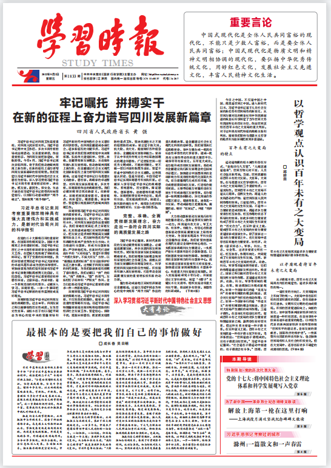
习近平总书记对四川工作高度重视，对四川人民深切关怀。习近平总书记到中央工作后，多次来川考察指导或出席活动，发表重要讲话、作出重要指示，为四川发展把脉定向、领航指引。今年6月，习近平总书记再次亲临四川，寄予我们推动治蜀兴川再上新台阶、在新的征程上奋力谱写四川发展新篇章的殷切期望。我们坚定以习近平新时代中国特色社会主义思想为指导，深入学习贯彻习近平总书记来川考察重要指示精神，讲政治、抓发展、惠民生、保安全，矢志不渝沿着习近平总书记指引的方向坚定前行，以实际行动忠诚拥护“两个确立”、坚决做到“两个维护”。
习近平总书记来川考察重要指示精神具有强大真理伟力和实践威力，是新时代治蜀兴川的科学指引
在党的二十大即将召开的重要时刻，在国际形势何其复杂、国家大事何其之多的重要时刻，习近平总书记百忙之中来川考察调研事关全局的重大工作，在巴蜀大地镌刻了领袖的光辉印记、留下了宝贵的精神财富。我们深切感受到习近平总书记大国领袖的卓越风范和赤诚为民的深厚情怀，更加由衷地为我们党和国家有习近平总书记掌舵领航而感到无比自豪、无比自信。习近平总书记重要指示精神思想深邃、立意深远、内涵丰富，是一个系统完备的有机整体，必须深入学习、深刻领悟，一步一个脚印把习近平总书记擘画的宏伟蓝图变成美好现实。
深刻领悟习近平总书记对四川发展的战略指引。过去10年，四川发展之所以能够取得历史性成就、发生历史性变革，最根本在于有以习近平同志为核心的党中央的坚强领导和习近平新时代中国特色社会主义思想的科学指引。在四川全面建成小康社会、迈步新征程的关键节点，习近平总书记要求我们坚决贯彻党中央决策部署，弘扬伟大建党精神，完整、准确、全面贯彻新发展理念，主动服务和融入新发展格局，推动治蜀兴川再上新台阶，在全面建设社会主义现代化国家新征程上奋力谱写四川发展新篇章。这是习近平总书记以马克思主义政治家、思想家、战略家的卓越智慧，对四川发展长期观察、多次考察、深刻洞察作出的战略指引。我们必须深刻领会其政治意义、政治要求，深刻把握其重要思想、重要观点，找准定位、理清思路、拿出举措，坚定用以统揽新时代治蜀兴川各项工作。
深刻领悟习近平总书记对四川发展的重要要求。习近平总书记从党和国家事业全局出发，贯穿历史、现实和未来，对四川发展亲自作出重要指示。我们要站在更高起点上谋划发展，扎实推进成渝地区双城经济圈建设，把发展立足点转移到提高发展质量和效益上来，把发展特色优势产业和战略性新兴产业作为主攻方向；大力推进科技创新，形成科技创新集群；严守耕地红线，在新时代打造更高水平的“天府粮仓”；坚定不移贯彻“共抓大保护、不搞大开发”方针，以“能酿出美酒的标准”想方设法保护好长江上游水质。这些赋予四川发展新的时代课题，为我们奋进新征程指明了奋斗路径。我们必须以“拼”的精神、“闯”的劲头、“创”的勇气，发扬钉钉子精神和“严细实”作风，全力以赴推动习近平总书记重要指示要求一件一件落地见效。
深刻领悟习近平总书记对四川发展的策略方法。习近平总书记来川考察，不仅给我们指路径、提要求，还注重传授策略和方法。习近平总书记特别强调要高效做好统筹疫情防控和经济社会发展工作，坚定信心，排除干扰，克服麻痹思想，抓紧抓实疫情防控重点工作，坚决巩固住来之不易的疫情防控成果；要立足于防大汛、抗大险、救大灾，提前做好各种应急准备，全面提高灾害防御能力；要善于从中华优秀传统文化中汲取治国理政的理念和思维，广泛借鉴世界一切优秀文明成果，不能封闭僵化，更不能一切以外国的东西为圭臬，坚定不移走中国特色社会主义道路。这些既是认识论，也是方法论，来自习近平总书记长期深刻思考和实践积累。必须深入学习习近平总书记的战略思维、系统思维、历史思维、辩证思维、创新思维、法治思维和底线思维，深刻把握贯穿其中的立场、观点和方法，切实提高抓经济、搞建设、防风险的能力水平，竭尽全力把四川工作做得更好，交出一份合格答卷。
完整、准确、全面贯彻新发展理念，奋力走出一条符合四川实际的高质量发展之路
习近平总书记强调，新时代新阶段的发展必须贯彻新发展理念，必须是高质量发展，并多次就四川发挥独特优势、更好服务国家发展全局提出明确要求。我们要用新发展理念统领和谋划经济社会各项工作，清醒认识当前发展面临的深刻复杂变化，科学把握四川发展的阶段性特征，积极服务和融入新发展格局，打造带动全国高质量发展的重要增长极和新的动力源。
强力推动成渝地区双城经济圈建设全面提速。这是以习近平同志为核心的党中央统筹“两个大局”作出的重大战略决策，是全面建设社会主义现代化四川的总牵引。我们要坚决扛起战略使命，集中力量办成一批具有标志性牵引性的大事要事，建成一批具有支撑性带动性的重大项目平台，确保年年有新变化、五年见大成效。着力提升成都极核发展能级，推动成都全面建设践行新发展理念的公园城市示范区，加快建设中国西部具有全球影响力和美誉度的现代化国际大都市。着力建强现代化成都都市圈，深化成德眉资同城化发展，打造综合能级更高、支撑带动能力更强的全省发展主干和成渝地区发展引擎。着力促进一轴两翼协同联动，深化川渝合作示范区建设，促进川东北、渝东北一体发展，带动成渝地区北翼振兴、南翼跨越，唱好“双城记”、共建“经济圈”。
大力推动创新驱动发展先行省和制造强省建设。创新是引领发展的第一动力。四川是科教大省、军工大省，有条件、有能力、有信心在推进创新驱动引领高质量发展上取得更大突破，为国家实现高水平科技自立自强作出贡献。我们要坚持创新在现代化建设全局中的核心地位，一头抓国家战略科技力量建设、一头抓产业技术创新和全社会创新创造，以机制创新突破体制性障碍，加快建设具有全国影响力的科技创新中心。高标准建设国家实验室和天府实验室，加快建设国家川藏铁路技术创新中心，构建重大科技基础设施集群。深入实施基础研究十年行动，开展前沿交叉学科研究，制定“卡脖子”关键技术攻关清单，组织实施省级重大科技专项，推出更多有价值、原创性的科研成果。大力开展“5+1”产业提质倍增行动，实施产业基础再造工程，巩固电子信息、先进材料产业良好发展势头，推动装备制造、食品饮料、能源化工提升产业能级，做强做优做大数字经济，培育更多万亿集群、千亿企业、“单项冠军”。
着力打造重要初级产品供给战略基地。四川是农业大省，是全国13个粮食主产省之一。我们要落实最严格的耕地保护制度，深入实施种业振兴行动，着力提高农业综合生产能力，稳定粮油、生猪等重要农产品供给，打造新时代更高水平的“天府粮仓”，把农业大省金字招牌擦得更亮。发挥清洁能源大省优势，大力推动电力源网荷储一体化，促进水风光氢多能互补发展，加快国家天然气（页岩气）千亿立方米级产能基地建设，打造世界级优质清洁能源基地。大力实施新一轮战略性矿产找矿行动，加快组建钒钛稀土磁铁矿产业创新联合体，推动从卖原料向卖高端材料、高精尖产品转变。
坚决筑牢长江黄河上游生态屏障。生态文明建设是关系中华民族永续发展的千年大计。四川地处长江黄河上游，是国家重要的水源涵养地、补给地和湿地生态功能区，以占黄河全流域2.4%的面积，贡献出川断面枯水期34.8%、丰水期30.9%的水量，保护好巴山蜀水，职责神圣、使命光荣。我们要坚定践行“两山”理念，树牢上游意识、强化上游担当，统筹山水林田湖草沙冰系统治理，落实河（湖）长制、林长制，高质量建设大熊猫国家公园，加快创建若尔盖国家公园，打造世界最美高原湿地国家名片，有序实施碳达峰碳中和，推动经济社会发展全面绿色转型，促进人与自然和谐共生，为子孙后代守护好这一片蓝天、一江碧水、一方净土。
加快建设新时代文化强省。习近平总书记在眉山三苏祠考察期间强调，要敬仰中华优秀传统文化，坚定文化自信。四川历史底蕴深厚，文化遗存璀璨，红色资源丰富，拥有建设新时代文化强省的独特优势。我们要增强文化自觉，培育和践行社会主义核心价值观，加强家庭、家教、家风建设，大力推动巴蜀文化传承创新发展。深化“四史”宣传教育，推动长征国家文化公园（四川段）等建设，用好红色资源，传播红色文化。深入实施文化惠民工程，创建三星堆国家文物保护利用示范区，加快推进长江、黄河国家文化公园（四川段）建设，加大历史文化名城名镇名村和古树名木保护力度。推动文旅融合发展，打造三星堆—金沙、九寨沟—黄龙、大熊猫、都江堰—青城山、峨眉山—乐山大佛等重点文旅品牌和文旅走廊，加快建设世界重要旅游目的地，让四川文旅名扬天下、誉满全球。
全面落实“疫情要防住、经济要稳住、发展要安全”工作方针，以实际行动迎接党的二十大胜利召开
习近平总书记强调，坚持稳中求进工作总基调，全面做好改革发展稳定各项工作，努力保持平稳健康的经济环境、国泰民安的社会环境、风清气正的政治环境，为党的二十大召开营造良好氛围。我们要高效统筹疫情防控和经济社会发展，更好统筹发展和安全，兢兢业业干好各项工作，努力完成全年目标任务。
推动“三驾马车”快马加鞭。大干快上抓投资，推动川藏铁路等在建项目加快建设，尽快形成更多实物工作量；推行容缺受理、极速审批、并联审批、并行推进，加快引大济岷水利工程、成渝中线高铁等项目前期工作；谋划一批“两新一重”项目，增强发展后劲。多措并举促消费，举办首届“中国（四川）国际熊猫消费节”，加强餐饮、旅游等行业扶持，大力发展消费新业态，促进外来消费加快回暖，成都等重点消费市场“满血复活”。扩大开放稳外贸，办好中外知名企业四川行活动季等展会活动，紧盯龙头企业加大产业链招商力度，带动产业集聚发展。
促进三次产业协同发力。确保农业稳产增收，守牢守好良田宝地，抓好450万亩高标准农田建设，加强撂荒地整治，确保粮食总产量710亿斤以上、生猪出栏6000万头以上。力促工业多拉快跑，逐企逐业逐市加强跟踪和服务保障，推动电子信息等重点产业扩能增效、稳产满产，支持动力电池等产业保持高速增长态势，促进汽车制造等行业尽快止跌回升，畅通产业链供应链。推动服务业复苏提速，加大对餐饮、零售、旅游、运输等困难行业纾困力度，抓好现代物流等生产性服务业，促进绿色红色特色融合发展。
着力解决群众“急难愁盼”。想方设法保障重点群体就业，用好公共卫生特别服务岗等政策性岗位，大力促进高校毕业生就业，全力稳定农民工、退役军人就业，倾力帮扶困难群体就业，保障劳动者平等就业权利。综合施策抓好保供稳价工作，扎紧“米袋子”、守好“菜篮子”、稳住“肉盘子”，坚决打击囤积居奇、串通涨价，强化电力电煤保供。用心用情办好民生实事，编制实施芦山、马尔康地震灾后恢复重建规划，巩固拓展脱贫攻坚成果，办好30件民生实事，开展普惠养老、普惠托育专项行动，保障困难群众基本生活。
持续夯实安全发展基础。把疫情防线织得“密之又密”，坚持“外防输入、内防反弹”总策略和“动态清零”总方针毫不动摇，严格落实“入川即检”，加快补齐核酸检测、转运隔离等短板，坚决守住“国门”“省门”。把安全底线筑得“牢之又牢”，不折不扣落实国务院安委会15条硬措施，深入开展安全生产大检查，抓好危险化学品、燃气、自建房和水电站等领域专项整治工作；立足防大汛、抗大险、救大灾，做好防汛减灾、地灾防治和应急准备各项工作；防范化解房地产、金融等领域重大风险，严厉打击违法犯罪行为。把生态红线守得“严之又严”，坚决全面彻底整改中央生态环保督察反馈问题，深入打好蓝天、碧水、净土保卫战，实施长江十年禁渔，加大黄河干流河岸侵蚀问题治理，牢牢守住生态环境质量“只能更好、不能变坏”的刚性底线，不断厚植四川绿色本底、提升生态颜值。
黄强省长：生态美则天府美，生态兴则四川兴
2022年1月4日，中国环境报头版发表四川省委副书记、省长黄强在2021年深入学习贯彻习近平生态文明思想研讨会上的致辞，全文如下：
生态美则天府美 生态兴则四川兴
四川省委副书记、省长黄强
生态文明建设功在当代、利在千秋。党的十八大以来，习近平总书记站在坚持和发展中国特色社会主义、实现中华民族伟大复兴的战略高度，与时俱进推动生态文明理论创新、实践创新、制度创新，提出一系列新理念新思想新战略，形成了习近平生态文明思想，开辟了生态文明建设理论和实践的新境界。从将生态文明写入宪法到党章中增加“绿水青山就是金山银山”等内容，从建好用好中央生态环保督察制度到推动实现碳达峰碳中和，从系统治理山水林田湖草沙冰到长江经济带“共抓大保护，不搞大开发”、黄河流域“重在保护，要在治理”，一幅青山常在、绿水长流、空气常新的美丽中国图景加快绘就。习近平生态文明思想造福中国、光耀世界。
四川好山好水好风光，自古享有“天下山水之观在蜀”的美誉。习近平总书记叮嘱我们，一定要把生态文明建设这篇大文章写好，充分绽放四川独特的自然生态之美、多彩人文之韵，谱写美丽中国的四川篇章。我们始终牢记嘱托，坚定用习近平生态文明思想武装头脑、指导实践、推动工作，重拳出击治污染，壮士断腕调结构，“四不两直”抓督察，进一步筑牢长江黄河上游生态屏障，美丽四川建设迈出坚实步伐。在这里，我们尽赏秀美山川千姿百态。“蜀山之王”贡嘎山、“蜀山之后”四姑娘山、“童话世界”九寨沟、“人间瑶池”黄龙、“若诗若画”若尔盖、“最后的香格里拉”稻城亚丁，“峨眉天下秀，青城天下幽、剑门天下险”享誉中外。在这里，我们领略万物生灵自然和谐。四川境内1400多条河流纵横交错，超全省面积70%的森林草原广袤翠绿，是全球34个生物多样性热点地区之一。四川有国家重点保护野生动物150多种，占全国总量的39.6%，居全国之冠，在这里，我们可以见到“四不像”麋鹿、“世界上最漂亮的猴子”川金丝猴、“雪域神鸟”黑颈鹤、“猛禽之王”金雕和海雕等珍稀动物，有野生大熊猫1387只，占全国74.4%，是驰名中外的大熊猫故乡。四川有高等植物近万种，占全国总量的1/3，居全国第二位，在这里，我们可以见到高原兰花、“高山牡丹”全缘绿绒蒿、“裸子植物活化石”攀枝花苏铁等珍稀植物，以及世界最大的天然竹林宜宾“蜀南竹海”。四川被称为“生物多样性宝库”，保持了生物多样性、原真性和完整性。这里我讲几个小故事。一是周恩来总理1954年在瑞士日内瓦湖畔散步时看到从中国四川引种的珙桐树非常高兴。珙桐树的花很像飞舞的鸽子，故被称为象征和平的“中国鸽子树”，深受欧洲人民的喜爱。周总理回国后指示相关部门要重视对珙桐的研究、保护和培植。1869年，法国传教士、博物学家戴维在四川省雅安市宝兴县最早发现了珙桐这种珍稀植物，也是他在当地首次发现了国宝大熊猫。二是在广元市和绵阳市之间的剑阁蜀道上，有一片全世界最大的人工古柏树林，号称“三百里程十万树”。这里有1万多株树龄在1700年至2300年的古柏树，被当地人称为“张飞柏”。这些古柏树源自秦代以来至明清时期的7次大规模植树活动，从古代的县令一直到现在，在离任交接时都要一一清点古柏树，或许这就是中国林长制的源头。三是在雅安市荥经县有一片珍贵的古桢楠树林，其中两棵树龄1700多年的桢楠树被央视评为“中国最美桢楠王”，等等。这些都构成了巴蜀大地最靓丽的绿色本底。在这里，我们拥有绿色动能得天独厚。水电装机容量居全国第一，中国“气大庆”建设如火如荼，凉山“大风车”每年吹出117亿度风电，大量光电有待开发，展露出无限发展风光。
生态美则天府美，生态兴则四川兴。我们将做习近平生态文明思想的坚定信仰者、忠实践行者和不懈奋斗者，牢固树立“绿水青山就是金山银山”“冰天雪地也是金山银山”理念，抓好中央生态环保督察反馈问题整改，一体化治理和保护好山水林田湖草沙冰，有序推进碳达峰碳中和，加快建设人与自然和谐共生绿色发展先行区，肩负起维护国家生态安全的神圣使命。
黄强省长在《学习时报》发表署名文章：
坚决扛起高水平科技自立自强时代重任
在“振芯铸魂固根”上为国家作出新贡献
科技是国家强盛之基，创新是民族进步之魂。站在“两个一百年”奋斗目标的历史交汇点、开启全面建设社会主义现代化国家新征程的重要时刻，习近平总书记高瞻远瞩、审时度势，明确提出坚持创新在我国现代化建设全局中的核心地位，鲜明指出构建新发展格局最本质的特征是实现高水平的自立自强，全面发出向高水平科技自立自强进军的动员令。习近平总书记的重要指示鼓舞人心、催人奋进，为建设世界科技强国指明了前进方向、提供了根本遵循。
四川是全国科教大省、军工大省，创新资源丰富，创新基础扎实。2018年2月，习近平总书记来川考察时指出，提高企业自主创新能力和国际竞争力，推动中国制造向中国创造转变、中国速度向中国质量转变、中国产品向中国品牌转变。2020年1月，中央财经委员会第六次会议研究推动成渝地区双城经济圈建设问题。成渝地区双城经济圈建设上升为国家战略，被赋予了“一极一源、两中心两地”的重大使命，其中之一是建设具有全国影响力的科技创新中心，前所未有地打开了四川发展空间。2021年6月，四川省委十一届九次全会对创新发展作了专门部署，审议通过了《中共四川省委关于深入推进创新驱动引领高质量发展的决定》；省政府配套制定了“科技创新十条”政策。四川深入学习贯彻习近平总书记“七一”重要讲话和关于科技创新的重要论述，牢固树立科学技术是第一生产力、创新是引领发展的第一动力、人才是第一资源理念，深入实施创新驱动发展战略，以提升科技创新牵引力、原创力、支撑力、竞争力、聚合力、保障力为抓手，在“振芯”上创新突破，在“铸魂”上砥砺精神，在“固根”上厚植土壤，坚决扛起建设具有全国影响力的科技创新中心的战略使命，坚决扛起高水平科技自立自强的时代重任。
以强化战略科技力量建设提升科技创新牵引力
习近平总书记指出，世界科技强国竞争，比拼的是国家战略科技力量。四川拥有中央在川科研院所53家，国家重大科技基础设施7个，国家重点实验室16个，国家级创新平台183个，国家“双一流”建设高校8所。
四川将发挥这些大院大所大学优势，坚持“四个面向”，聚焦最有基础、最有优势、最需突破领域，系统谋划战略科技力量建设，提升创新体系整体效能。全力打造“排头兵”，发挥军工优势，争创国家实验室，大力支持国防建设；建好国家实验室四川基地，加快建设大型低速风洞、高海拔宇宙线观测站等国家重大科技基础设施。着力打造“预备队”，聚焦电子信息、生命科学、生态环境等领域组建天府实验室，建强服务国家战略科技力量建设的生力军。大力打造“集团军”，高起点建设成渝综合性科学中心，高水平打造西部（成都）科学城，高效率推动中国（绵阳）科技城突破性发展；推进国家川藏铁路技术创新中心建设，围绕生物医药、现代交通等领域创建国家重点实验室，围绕网络安全、生物育种等领域建设省重点实验室，不断构筑战略科技力量的坚实支撑。
以加强关键核心技术攻关提升科技创新原创力
习近平总书记指出，关键核心技术是要不来、买不来、讨不来的；坚决打赢关键核心技术攻坚战。上世纪五六十年代，面对严峻的国际形势，以毛泽东同志为核心的党的第一代中央领导集体果断作出了研制“两弹一星”的战略决策，聂荣臻、钱学森等带领老一辈科学家在国家一穷二白的条件下，自力更生造出了“两弹一星”。今天，我们没有任何理由被别人卡住“脖子”。
四川将传承发扬“两弹一星”精神，继续为国家争光争气，既解决“卡脖子”又锻造“杀手锏”，练就更多“独门绝技”，打造更多“国之重器”。一方面，持之以恒加强基础研究。过去很多科研走的是跟踪模仿道路，对基础研究重视不够，现在需要更加注重正向设计，更加注重原始创新。基础研究的重大突破，允许“十年不鸣”，争取“一鸣惊人”。我们将实施基础研究十年行动，围绕量子科学、物质结构等开展前沿交叉学科研究，加强集成电路、新能源、生物技术等应用基础研究，推出更多有价值、原创性的科研成果。另一方面，坚持不懈开展集成攻关。四川产业基础扎实，农业“10+3”、工业“5+1”、服务业“4+6”体系完善。我们围绕产业链部署创新链、围绕创新链布局产业链，聚焦集成电路与新型显示、航空与燃机、钒钛稀土资源、智能装备等领域重大科技需求，组织实施省级重大科技专项。编制重点产业链图谱，制定“卡脖子”关键技术攻关清单，构建产业技术创新平台体系，以自主可控的创新链保障产业链供应链安全稳定。
以夯实企业创新主体地位提升科技创新支撑力
习近平总书记指出，创新链产业链融合，关键是要确立企业创新主体地位。2020年，四川拥有有效国家高新技术企业8160家，是2015年的3倍；企业投入研发经费547.4亿元，是2015年的2.3倍，越来越多的企业把目光投向创新。
四川将进一步推动创新要素向企业集聚，让企业真正成为技术创新决策、研发投入、科研组织和成果转化应用的主体，变“要我创新”为“我要创新”。一方面，正向激励企业创新。发挥企业出题者作用，以龙头企业牵头组建创新联合体。综合运用后补助、贷款贴息、风险补偿等方式引导更多企业加大研发投入，鼓励政府投资引导基金对种子期、初创期科技型企业给予支持。实施首台（套）装备、首批次材料、首版次软件应用奖补政策，促进重大创新产品推广应用。大力发展风险投资、创业投资，加强知识产权保护，支持企业加强技术成果孵化及产业化，实现就地转化利用。加快建设国家数字经济创新发展试验区，实施“上云用数赋智”行动，推动企业数字化、网络化、智能化发展。另一方面，反向倒逼企业创新。以“亩产论英雄”为导向，结合企业单位投资强度、营收产出率、产值能耗等指标，促使企业在优胜劣汰中提高创新能力；健全园区企业退出机制，在环境容量、用地用电等方面制定差异化配置政策，坚决遏制“两高”项目盲目上马，彻底整治“散乱污”企业，避免“劣币驱逐良币”。企业要成为创新主体，离不开富有科学家精神的企业家。我们将大力吸引培育具有科学家精神的企业家队伍，始终重视核心技术研发、创新队伍培育、专利技术维护，引领企业向创新高峰攀登。
以打造创新人才集聚高地提升科技创新竞争力
习近平总书记指出，国家科技创新力的根本源泉在于人；我国要实现高水平科技自立自强，归根结底要靠高水平创新人才。近年来，四川大力实施人才强省战略，全省技能人才总量突破1000万人，专业技术人才总量达371万人。
四川将紧紧抓住把人才“育出来、引进来、用起来”三个关键环节，激发人才创新创造活力，以人才“智高点”抢占发展“制高点”。以更实举措培育人才。实施“天府峨眉计划”“天府青城计划”，增设国防科技领域人才专项，对国家实验室、天府实验室等重大创新平台和国防科技领域等重点用人单位给予人才计划配额。加强青年人才培养储备，支持高校、科研院所与企业联合培养研究生，设立博士后创新人才项目。构建现代职业教育和技能培训体系，加大天府工匠培养力度，拓宽高技能人才发展通道。以更好服务引进人才。实施国家高端外国专家引进、天府高端引智计划，优化外国专家来川工作服务，落实外籍高层次人才出入境、停居留便利政策。拓展“天府英才卡”服务事项，完善人才安居就医、子女就学、家属就业等服务措施，让来川人才安心创业、顺心工作、舒心生活。以更大力度用好人才。坚持“破四唯”和“立新标”并举，加快建立以创新价值、能力、贡献为导向的人才评价体系，赋予科研人员更大技术路线决定权和经费使用权。强化用人单位评价主体地位，推行代表性成果评价制度。采取“一事一议”方式，解决创新团队的科研立项、经费支持和团队核心成员的职务职称、薪酬待遇、服务保障等事项。发挥“双创”示范基地引导作用，大力培育创新创业集聚区，为各类人才施展才华搭建广阔舞台。
以推进全方位开放合作提升科技创新聚合力
习近平总书记指出，越是面临封锁打压，越不能搞自我封闭、自我隔绝，而是要实施更加开放包容、互惠共享的国际科技合作战略。四川地处“一带一路”和长江经济带联结点，是我国西向南向开放门户。中央把成渝地区列为国家综合立体交通网“四极”之一，加快建设西部陆海新通道，让四川更好畅联“一带”和“一路”。成都双流国际机场开通国际（地区）航线131条，天府国际机场建成投运，实现“两场一体”运营，架起了与全球更好开展科技交流合作的“空中丝绸之路”。
四川将牢固树立世界眼光，主动融入新发展格局，围绕构筑高效能开放通道枢纽、培育高能级开放市场主体、建设高层次开放合作平台、营造高标准开放发展环境制定“开放发展十条”政策，大力打造改革开放新高地，更好对接全球创新网络，集聚国内国际创新资源。紧盯“点”。下好创新“先手棋”，支持省内企业在境外建立研发中心，在国际枢纽城市落子布点、抢滩布局。发挥中国—欧洲中心对欧综合合作平台作用，依托成都国际技术转移中心，打造国家层面中欧创新合作平台，建立线上、线下中欧协作合作网络。抓住“线”。争取开通更多国际航线，扩大与“一带一路”沿线国家创新合作朋友圈，共建联合实验室、科技创新联盟和科技创新基地。加强与东南亚、南亚等国家（地区）科技合作。深化与京津冀、长三角、粤港澳大湾区等区域的科技合作，联合重庆建设“一带一路”科技创新合作区和国际技术转移中心。拓展“面”。支持各类创新主体跟进研究世界前沿科技，鼓励市州参与进博会、服贸会、高交会等国家级展会，支持国内外科研机构和人员参与省级科技计划项目。依托国际合作园区、自贸试验区、综合保税区等平台载体，打造高端创新资源承载地，营造市场化法治化国际化营商环境，促进科技合作向更高水平发展。
以机制创新突破体制障碍提升科技创新保障力
习近平总书记指出，推进自主创新，最紧迫的是要破除体制机制障碍。四川作了一些探索，以“小切口推大改革”进行机制创新。比如，在全国率先探索开展职务科技成果权属混合所有制改革，激发了科研人员科技创新和成果转化的积极性，全省45家试点单位已完成职务科技成果分割确权634项，作价入股创办企业100余家，吸引企业投资近70亿元。这项改革被誉为科技领域的“小岗村”改革，经验做法在全国复制推广。
四川将深耕机制创新“试验田”，为国家作出更多示范、探索更多经验。摒弃“等靠要”。主动以思想破冰引领发展突围，以观念更新走出发展新路。小切口、大纵深推进科研生产管理体制改革，建立生产回报设计研发的合作机制、以利益分配为核心的激励机制和以权益保障为纽带的转化机制，形成探索、预研、研制、生产的良性循环。奋力“比学干”。对标一流，取长补短，对看准的科技项目和创新技术，简化程序、优化机制，咬定青山不放松。干“点穴位”的事，抓住关联性强的重大科技项目，建立联合争取、协同实施机制，力争落地一个就带动一片。勇于“闯创试”。开展职务科技成果转化前非资产化管理改革试点，完善科研人员职务发明成果权益分享机制。建立科研人员把主要精力放在科研上的保障机制，鼓励科研人员勇闯创新“无人区”。实施“揭榜挂帅”“赛马”等制度，开展经费使用“包干制”试点，让有真才实学的科研人员脱颖而出。完善尽职免责的容错机制，提高创新失败容忍度，营造鼓励创新、宽容失败的良好环境。
百年风华正茂，百年奋斗不止。我们将大力弘扬科学家精神，接续一代又一代科学家楷模为国建功的无上荣光，强化科技工作者的家国情怀，坚定科技工作者的初心使命意识，引导科技工作者勇攀科学高峰。培育崇尚科学的创新文化，深入实施全民科学素质行动计划，大力推动科学普及，广泛宣传科技工作者勇于探索、献身科学的生动事迹，在全社会形成尊重劳动、尊重知识、尊重人才、尊重创造的浓厚氛围。
黄强在《中国环境报》发表署名文章：
铁心布置 铁面检查 铁腕执法 坚决筑牢长江黄河上游重要生态屏障
8月11日出版的《中国环境报》在头版头条，发表了四川省委副书记、省长黄强的署名文章《铁心布置 铁面检查 铁腕执法 坚决筑牢长江黄河上游重要生态屏障》，全文转载如下。
四川省委副书记、省长黄强
我们始终牢记习近平总书记殷殷嘱托，心怀“国之大者”，以坚决的态度和实际行动践行“两个维护”。坚持深学笃行、政治引领。省委省政府把学习贯彻习近平生态文明思想、习近平总书记重要讲话和指示批示精神作为重大政治任务，及时召开省委常委会会议、省政府常务会议传达学习，省委全会专门作出推进绿色发展建设美丽四川的决定，省委十一届三次至九次全会都对生态文明建设和生态环境保护作出安排，推动全省学习贯彻习近平生态文明思想往深里走、往实里走、往心里走。
生态文明建设是关系中华民族永续发展的千年大计。四川省认真学习、深刻领会、全面贯彻习近平新时代中国特色社会主义思想，牢固树立“绿水青山就是金山银山”理念，切实树牢上游意识、坚决担负上游责任，坚定不移走生态优先、绿色发展之路，奋力谱写美丽中国四川篇章。
坚定以习近平生态文明思想为指导，牢牢扛起生态环境保护重大政治责任
四川好山好水好风光，自古享有“天下山水之观在蜀”美誉，古人盛赞“优游之天府，宇宙之绝观”。四川是长江、黄河上游重要生态屏障，全省96.6%的水系属长江水系，境内1.87万平方公里属黄河流域，千百年来奔腾不息的长江、黄河孕育滋养着生生不息向前发展的中华民族，保护好四川的山山水水，职责神圣、使命光荣。
习近平总书记十分关心、时刻牵挂四川生态文明建设，多次作出重要指示批示。2018年2月，习近平总书记亲临四川视察时指出，四川是个好地方，山水秀丽、民风淳朴、文化多彩，一定要把生态文明建设这篇大文章写好，充分绽放四川独特的自然生态之美、多彩人文之韵，谱写美丽中国四川篇章。习近平总书记的深切关怀和重要指示，为我们进一步加强生态环境保护、推进生态文明建设注入强劲动力、提供了根本遵循。
我们始终牢记习近平总书记殷殷嘱托，心怀“国之大者”，以坚决的态度和实际行动践行“两个维护”。坚持深学笃行、政治引领。省委省政府把学习贯彻习近平生态文明思想、习近平总书记重要讲话和指示批示精神作为重大政治任务，及时召开省委常委会会议、省政府常务会议传达学习，省委全会专门作出推进绿色发展建设美丽四川的决定，省委十一届三次至九次全会都对生态文明建设和生态环境保护作出安排，推动全省学习贯彻习近平生态文明思想往深里走、往实里走、往心里走。坚持系统部署、强力推进。将省生态文明建设领导小组升格为省生态环境保护委员会，省委、省政府主要负责同志任主任，成立省推动长江经济带发展领导小组、省推动黄河流域生态保护和高质量发展领导小组。出台《关于构建现代环境治理体系的实施意见》等多个重大政策措施，统筹谋划、系统推进全省生态文明建设和生态环境保护工作。深入实施污染防治攻坚“八大战役”，精准治污、科学治污、依法治污。强力淘汰落后产能，大力发展绿色低碳循环经济，积极推进清洁能源示范省建设，从根本上源头上推动全省绿色发展。坚持动真碰硬、一抓到底。认真落实习近平总书记关于黄龙溪水质达标、嘉陵江上游尾矿库环境风险问题等重要指示批示精神，组织实施锦江水质达标攻坚，举一反三在全省开展尾矿库环境问题全面排查，制定“一库一策”方案，实施工程整治，坚决推动习近平总书记重要指示在四川落地见效。
铁心布置、铁面检查、铁腕执法，以铁的作风强力推动生态环境质量持续改善
习近平总书记强调，环境就是民生，青山就是美丽，蓝天也是幸福；对破坏生态环境的行为，不能手软，不能下不为例，决不能让制度规定成为“没有牙齿的老虎”；对突破三条红线、仍然沿用粗放增长模式、吃祖宗饭砸子孙碗的事，绝对不能再干，绝对不允许再干。我们要始终从政治的角度看待生态环境问题，注重从生态环境问题洞察政治后果，深刻认识问题、主动发现问题、坚决整改问题，不断提高政治判断力、政治领悟力、政治执行力。
我们坚持把生态环境保护工作抓在日常、严在经常，将责任落实到最小单元，真正做到“上热下烫”，以铁的作风形成强大威慑力。铁心布置。省委省政府多次召开省生态环境保护委员会全体会议、全省生态环境保护工作会议等研究部署生态环境保护重点工作，省政府常务会议每季度听取大气污染防治汇报，排名靠后的市（州）政府主要负责同志作表态发言。每月向社会公开通报大气、水环境质量状况，对工作排名靠后、环境质量改善不力的市（州），省政府进行约谈，真正做到重要工作亲自部署、重大问题亲自过问、重要环节亲自协调、重要案件亲自督办，切实把生态环境保护各项要求落到实处。铁面检查。坚持工作有布置就有检查，严格落实“党政同责、一岗双责”和“三管三必须”要求，建立省督查、市抽查、县自查的工作机制。省委主要负责同志多次深入基层实地调研督导，省政府主要负责同志及分管负责同志经常不定期采取“四不两直”的方式暗查暗访，省直部门同步开展行业领域暗查暗访，形成一级抓一级、层层抓落实的工作格局。“逗硬”生态环境保护绩效考核，坚决落实生态环境保护“一票否决”制度。铁腕执法。打好污染防治攻坚战是一场大仗、硬仗、苦仗，我们勇当敢于斗争、善于斗争的战士、斗士和勇士，决不当绅士。建立五级环境网格监管体系，发挥卫星遥感、在线监测等技术支撑作用，常态化开展“双随机一公开”环境监管执法，坚决杜绝弄虚作假、敷衍塞责。大力清理“散乱污”企业，做到坚决整治、动态清零，对污染破坏环境行为“零容忍”。
以钉钉子精神纵深推进生态环境保护督察问题整改，坚决守住生态环境质量“只能更好不能变坏”刚性底线要求
中央生态环境保护督察是习近平总书记亲自谋划、亲自倡导、亲自部署、亲自推动的重大改革举措和重大制度安排，是一项贯彻落实习近平生态文明思想的“政治体检”，在全国掀起了大力整治生态环境突出问题的“绿色风暴”。2015年中央环境保护督察工作开展以来，在督察的每个关键阶段和重要环节，习近平总书记都要亲自作出重要指示批示，为督察工作撑腰打气、指方向、提要求，推动督察制度向纵深发展。中央生态环境保护督察曝光典型案例直指痛点、不留情面，形成强大震慑，充分表明了党中央推进生态文明建设和整治生态环境突出问题的坚定决心和坚强意志。
我们坚决贯彻落实中央决策部署，坚持问题导向、目标导向、结果导向，敢于直面问题、刀刃向内，打好突出问题整改“歼灭战”“持久战”。紧盯国家移交问题抓整改。扭住中央生态环境保护督察及“回头看”、长江经济带生态环境警示片反馈问题不放，严格落实“清单制+责任制+销号制”，形成全省总方案、任务清单、“N”个各地各部门细化方案的“1+1+N”整改工作体系，省级领导包案督办重点难点问题，绝不手软、毫不含糊，目前中央生态环境保护督察及“回头看”155项整改任务已完成146项，国家移交的62个长江生态环境问题整改完成46个。紧盯省级环保督察发现问题抓整改。坚持主动出击、自我揭短、果断“亮剑”，把省级环保督察作为中央生态环境保护督察的重要延伸和补充，省级领导任督察组组长，省政府主要负责同志任省会城市督察组组长，全覆盖开展21个市（州）第二轮省级环保督察，发现生态环境问题9200多个、追责问责1100多人，推动生态环境重大问题、难点问题加快解决。紧盯群众身边环境问题抓整改。坚持生态惠民、生态利民、生态为民，切实把解决群众身边突出环境问题作为重要民生工程紧抓不放，持续推进1.2万个中央生态环境保护督察群众信访举报问题整改，让老百姓感受到实实在在的变化，享受到更多蓝天白云、水清岸绿。
驰而不息、持续用力推进生态保护与修复，不断夯实“美丽四川”生态底色
习近平总书记强调，要像保护眼睛一样保护生态环境，像对待生命一样对待生态环境，让自然生态美景永驻人间。四川地跨青藏高原、横断山脉、秦巴山地等地貌单元，有森林、草地、湿地、冰川等多种自然生态系统，是全球34个生物多样性热点地区之一，拥有九寨沟、峨眉山、九曲黄河第一湾等享誉中外的自然美景。这是大自然对四川的特殊恩赐，更是我们深入践行“绿水青山就是金山银山”理念、建设世界重要旅游目的地的独特优势，必须倍加珍惜、万般呵护，让自然生态之美永放光彩。
我们深刻把握生态文明建设的历史方位，清醒认识生态环境保护面临的矛盾挑战，坚持系统观念、长短结合、综合施策、标本兼治，突出生态保护与修复，认真编制“十四五”生态环境保护、黄河流域生态环境保护等系列规划，着力夯实长江黄河上游重要生态屏障基底。坚定贯彻长江流域“共抓大保护、不搞大开发”。执行长江经济带战略环评“三线一单”，划定14.9万平方公里生态保护红线，占全省幅员面积30.7%。取消58个重点生态功能区（县）和生态脆弱国家扶贫开发重点县地区生产总值考核，禁止在长江干流及主要支流岸线1公里内新建化工园区。高标准推进大熊猫国家公园建设，实行最严格保护，保持自然生态完整性原真性，实施“大熊猫+”行动，加强以大熊猫为核心的生物多样性保护研究，大熊猫野外监测年遇见数由135只上升到178只。扎实做好长江“十年禁渔”，大力实施“清船”“清网”“清江”“清湖”行动，切实让禁渔“铁令”生威。深入推动黄河流域生态保护和高质量发展。制定川西北生态示范区建设水平评价指标体系，推进川西北草原湿地等重点生态功能区生态保护修复。高质量建设若尔盖国家公园，加强川甘两省协同合作，奋力打造世界最美高原湿地国家名片。用心用情用力保护好、管理好、运用好红色资源，坚定走好绿色红色特色融合发展之路，让黄河成为造福人民的幸福河。统筹推进山水林田湖草沙系统治理。全面推进河（湖）长制，打好河湖保护人民战争。大力推进乌蒙山连片区域土地整治，整理复垦土地54万亩，抓好废弃露天矿山生态修复等国家重大工程，治理水土流失34.7万亩。深入推进绿化全川行动，累计完成营造林830万亩、草原生态修复治理902万亩，森林覆盖率达40%，进一步夯实四川绿色发展生态本底。
生态环境保护和生态文明建设，道阻且长、行则将至。“十四五”时期，在全面建设社会主义现代化四川新征程中，我们将深入学习贯彻习近平生态文明思想和习近平总书记“七一”重要讲话精神，认真贯彻落实党的十九届五中全会精神，完整准确全面贯彻新发展理念，把生态文明建设和生态环境保护摆在更加突出位置，坚定不移推动实现碳达峰、碳中和目标，抢抓成渝地区双城经济圈建设重大机遇，加快建设高品质生活宜居地，持续深入打好污染防治攻坚战，严控“两高”项目，走生产发展、生活富裕、生态良好的文明发展道路，推动全省生态环境质量进一步改善，切实筑牢长江黄河上游重要生态屏障，奋力谱写美丽中国四川新篇章。